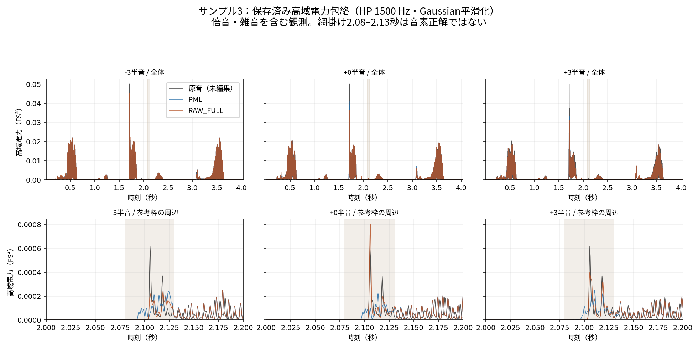
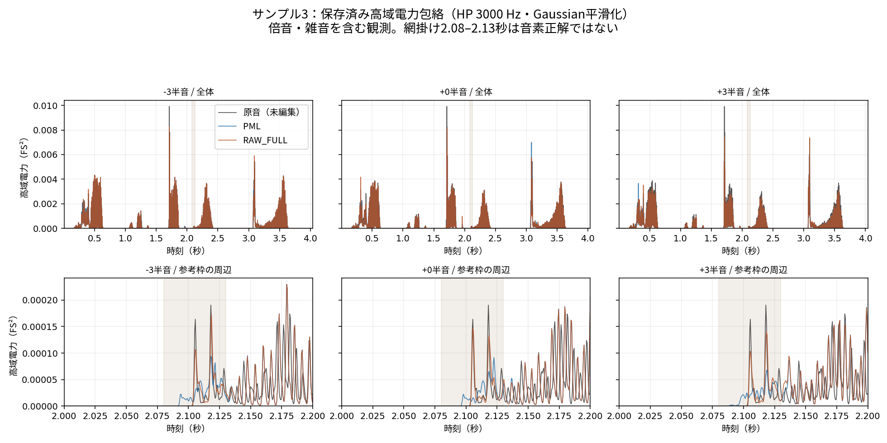

高域電力のAM観測
PMLとRAW_FULLの全窓・参考枠比較
比較結果：全体と参考枠で、source追加比の向きが異なる
基本条件の全窓では、RAW_FULL−PMLのsource追加説明比は8群すべてで平均・中央値が正。一方、参考枠交差窓では8群中7群で負でした。
全窓の差の中央値は +7.35×10⁻⁷〜+1.11×10⁻⁵、平均は +1.58×10⁻⁴〜+9.47×10⁻³。参考枠では−3半音・20 msだけが増加します。参考枠の局所結果を、全発話のsource時計効果の不在へ一般化しません。
source時計への追加説明は全体にも残ります。ただし、保留周期でのsource追加は多くの窓で予測誤差を増やし、3 kHz帯域では全窓の差の中央値の符号も変わります。特定の基音sin/cosへの当てはまりと、RAW_FULL固有の反復的なAM機構の確証は区別が必要です。音質改善・AM不存在・方式採否は判定していません。
source追加比 = Uₛ/V₀。以下のΔは同じ観測点上の RAW_FULL−PML。百分率でなく比の差です。「8群」は4窓長×2編集音高で、8つの独立試行ではありません。
| 半音 / ms | 全窓 n | 全窓 Δ平均 | 全窓 Δ中央値 | 参考 n | 参考 Δ平均 | 参考 Δ中央値 | 非交差 n | 非交差 Δ平均 | 非交差 Δ中央値 |
|---|---|---|---|---|---|---|---|---|---|
| -3 / 20 | 199 | +0.00946688 | +7.35314e-07 | 3 | +0.0947375 | +0.0246943 | 196 | +0.00816172 | +4.19794e-07 |
| +3 / 20 | 199 | +0.00891377 | +1.89521e-06 | 3 | -0.0803457 | -0.0643297 | 196 | +0.01028 | +2.86746e-06 |
| -3 / 40 | 198 | +0.000545536 | +2.07697e-06 | 4 | -0.0218095 | -0.0127255 | 194 | +0.00100647 | +2.86993e-06 |
| +3 / 40 | 198 | +0.000158486 | +3.39254e-06 | 4 | -0.0347237 | -0.0329354 | 194 | +0.000877708 | +3.39254e-06 |
| -3 / 80 | 196 | +0.00155693 | +4.13848e-06 | 6 | -0.0108487 | -0.0102038 | 190 | +0.00194868 | +6.29076e-06 |
| +3 / 80 | 196 | +0.0028165 | +8.96956e-06 | 6 | -0.0125117 | -0.0048387 | 190 | +0.00330054 | +1.15411e-05 |
| -3 / 160 | 192 | +0.00140851 | +7.37491e-06 | 10 | -0.00153453 | -0.000798046 | 182 | +0.00157022 | +1.13763e-05 |
| +3 / 160 | 192 | +0.00178888 | +1.11097e-05 | 10 | -0.00473109 | -0.00591028 | 182 | +0.00214712 | +1.80535e-05 |
参考枠交差窓：比と絶対量を両方見る
参考枠は [2.08, 2.13) 秒です。交差する窓全体を集計しており、枠内だけの電力ではありません。比は各波形の変動量V₀で割るため、絶対量と増減が一致しないことがあります。
| 半音 / ms | 有効 / 予定窓 | 原音 Uₛ/V₀ 平均 | PML Uₛ/V₀ 平均 | RAW_FULL Uₛ/V₀ 平均 | Δsource比 平均 | Δsource比 中央値 | Δ > 0 / < 0 | PML Uₜ/V₀ 平均 | RAW_FULL Uₜ/V₀ 平均 | 最大ρ₁ |
|---|---|---|---|---|---|---|---|---|---|---|
| -3 / 20 | 3 / 3 | 0.322971 | 0.204483 | 0.299221 | +0.0947375 | +0.0246943 | 3 / 0 | 0.241758 | 0.420807 | 0.8932 |
| +3 / 20 | 3 / 3 | 0.385847 | 0.250822 | 0.170477 | -0.0803457 | -0.0643297 | 1 / 2 | 0.261981 | 0.295713 | 0.851349 |
| -3 / 40 | 4 / 4 | 0.18936 | 0.0582083 | 0.0363988 | -0.0218095 | -0.0127255 | 1 / 3 | 0.109716 | 0.208258 | 0.552788 |
| +3 / 40 | 4 / 4 | 0.180711 | 0.0940799 | 0.0593562 | -0.0347237 | -0.0329354 | 2 / 2 | 0.175759 | 0.197213 | 0.391809 |
| -3 / 80 | 6 / 6 | 0.09598 | 0.0186507 | 0.00780198 | -0.0108487 | -0.0102038 | 2 / 4 | 0.106081 | 0.126731 | 0.1971 |
| +3 / 80 | 6 / 6 | 0.0921545 | 0.0270585 | 0.0145469 | -0.0125117 | -0.0048387 | 1 / 5 | 0.118838 | 0.151491 | 0.257636 |
| -3 / 160 | 10 / 10 | 0.0817698 | 0.00682367 | 0.00528915 | -0.00153453 | -0.000798046 | 3 / 7 | 0.123312 | 0.131068 | 0.140063 |
| +3 / 160 | 10 / 10 | 0.0829074 | 0.00888408 | 0.00415299 | -0.00473109 | -0.00591028 | 1 / 9 | 0.116786 | 0.135537 | 0.106705 |
| 半音 / ms | PML μ 平均 FS² | RAW_FULL μ 平均 FS² | Δμ 平均 FS² | PML Uₛ 平均 FS⁴ | RAW_FULL Uₛ 平均 FS⁴ | ΔUₛ 平均 FS⁴ | ΔUₛ 中央値 FS⁴ | ΔUₜ 平均 FS⁴ |
|---|---|---|---|---|---|---|---|---|
| -3 / 20 | 7.44434e-05 | 5.84139e-05 | -1.60295e-05 | 2.82135e-10 | 5.39857e-10 | +2.57722e-10 | -4.9037e-11 | +1.02345e-09 |
| +3 / 20 | 6.27607e-05 | 6.77888e-05 | +5.02801e-06 | 5.28884e-10 | 2.24366e-09 | +1.71478e-09 | +2.84045e-11 | +2.88031e-09 |
| -3 / 40 | 6.08361e-05 | 4.88092e-05 | -1.20269e-05 | 7.23348e-11 | 3.57134e-11 | -3.66214e-11 | -4.23974e-11 | +1.99194e-10 |
| +3 / 40 | 5.22187e-05 | 5.59549e-05 | +3.73621e-06 | 1.38405e-10 | 1.24378e-10 | -1.40271e-11 | -5.45041e-12 | +5.57472e-10 |
| -3 / 80 | 5.03094e-05 | 4.22852e-05 | -8.02421e-06 | 4.07481e-11 | 2.30897e-11 | -1.76583e-11 | -1.15441e-11 | +1.91105e-11 |
| +3 / 80 | 4.5287e-05 | 4.77614e-05 | +2.47439e-06 | 4.90802e-11 | 4.70079e-11 | -2.07237e-12 | -2.00638e-13 | +3.47642e-10 |
| -3 / 160 | 6.89438e-05 | 6.38109e-05 | -5.13288e-06 | 1.88129e-10 | 1.84266e-10 | -3.86359e-12 | -6.09606e-12 | +8.12762e-12 |
| +3 / 160 | 6.65938e-05 | 7.02763e-05 | +3.68245e-06 | 4.65971e-11 | 4.62386e-11 | -3.58536e-13 | -3.98115e-12 | +3.28276e-10 |
例：+3半音・20 msではsource追加比差の平均 −0.0803457 と、絶対Uₛ差の平均 +1.71478×10⁻⁹ FS⁴ が逆向きです。−3半音・20 msのUₛ差は平均が正でも中央値は負。差の中央値と、各方式の中央値同士の差は別の量です。
全窓の絶対量を開く
| 半音 / ms | PML μ 平均 FS² | RAW_FULL μ 平均 FS² | Δμ 平均 FS² | PML Uₛ 平均 FS⁴ | RAW_FULL Uₛ 平均 FS⁴ | ΔUₛ 平均 FS⁴ | ΔUₛ 中央値 FS⁴ | ΔUₜ 平均 FS⁴ |
|---|---|---|---|---|---|---|---|---|
| -3 / 20 | 0.000927485 | 0.000925686 | -1.79896e-06 | 1.72276e-07 | 1.80747e-07 | +8.4703e-09 | +2.80381e-22 | +2.19275e-08 |
| +3 / 20 | 0.000932256 | 0.000923295 | -8.96141e-06 | 9.17674e-08 | 8.49177e-08 | -6.84967e-09 | +5.1693e-22 | +7.90376e-09 |
| -3 / 40 | 0.000932169 | 0.000930361 | -1.80804e-06 | 9.64266e-08 | 1.11534e-07 | +1.51076e-08 | +1.95558e-22 | +5.47251e-08 |
| +3 / 40 | 0.000936965 | 0.000927958 | -9.00667e-06 | 6.58893e-08 | 6.36575e-08 | -2.23181e-09 | +6.45289e-22 | +4.63157e-09 |
| -3 / 80 | 0.000941681 | 0.000939854 | -1.82649e-06 | 4.8796e-08 | 5.64863e-08 | +7.6903e-09 | +1.19372e-22 | +4.27216e-08 |
| +3 / 80 | 0.000946526 | 0.000937427 | -9.09858e-06 | 2.66105e-08 | 2.63572e-08 | -2.53324e-10 | +1.2744e-21 | +2.80084e-09 |
| -3 / 160 | 0.000961298 | 0.000959433 | -1.86483e-06 | 2.0734e-08 | 2.44816e-08 | +3.74756e-09 | +3.02249e-21 | +3.5138e-08 |
| +3 / 160 | 0.000966242 | 0.000956954 | -9.28734e-06 | 1.32654e-08 | 1.33122e-08 | +4.67998e-11 | +7.86504e-21 | +1.57656e-09 |
比較音声：原音・現在のPML・RAW_FULL
観測に使った既存の公開PCM16音声を、そのまま参照しています。新規合成・正規化・音量合わせはしていません。16 kHz、64,720点（4.045秒）、seed 0。プレーヤーはインターネット接続を使います。
0半音（native）
0半音ではsourceとtargetの時計が同一です。2つの時計への寄与は識別不能で、source/targetの独立量は欠測理由付きです。単一時計の値だけを表示します。
±3比較の「原音」も同じ未編集の1本です。原音を±3半音化した音声でも、追加の録音でもありません。
保留周期：source追加で予測誤差が減るか
基本条件の80/160 ms窓で、保存source時計の完全な1周期を順番に保留した、既存の予測結果です。source追加利益 = MSE(targetのみ) − MSE(source＋target)。負はsourceを追加すると保留点の予測誤差が増えることを示します。target追加利益も同様に、sourceのみとの差です。
RAW_FULLの参考枠交差窓では、source追加利益が負の窓は−3半音で6/6・10/10、+3半音で5/6・10/10。窓平均の利益は全4群で負です。大きさは次表のとおりで、単なる成功・失敗数にはしません。
| 半音 / ms / 波形 | 窓数 | source追加利益 平均 FS⁴ | 同 中央値 FS⁴ | 利益 < 0 / 定義窓 | target追加利益 平均 FS⁴ | 周期fold延べ / 一意周期 | 保留点延べ / 一意点 | source利益 点加重平均 FS⁴ |
|---|---|---|---|---|---|---|---|---|
| -3 / 80 / PML | 6 | -7.59815e-11 | -5.36578e-11 | 6 / 6 | +2.95228e-10 | 61 / 24 | 873 / 342 | -7.66915e-11 |
| -3 / 80 / RAW_FULL | 6 | -2.24711e-10 | -2.56839e-10 | 6 / 6 | +1.33383e-10 | 61 / 24 | 873 / 342 | -2.25061e-10 |
| +3 / 80 / PML | 6 | -6.80821e-11 | -6.56697e-11 | 5 / 6 | +1.43146e-10 | 61 / 24 | 873 / 342 | -6.87293e-11 |
| +3 / 80 / RAW_FULL | 6 | -4.80331e-10 | -5.03095e-10 | 5 / 6 | +1.47988e-10 | 61 / 24 | 873 / 342 | -4.801e-10 |
| -3 / 160 / PML | 10 | -3.08121e-10 | -5.71938e-11 | 10 / 10 | +4.32641e-09 | 218 / 49 | 3072 / 667 | -3.11154e-10 |
| -3 / 160 / RAW_FULL | 10 | -3.38311e-10 | -7.89676e-11 | 10 / 10 | +4.27434e-09 | 218 / 49 | 3072 / 667 | -3.41509e-10 |
| +3 / 160 / PML | 10 | -2.35853e-10 | -5.26018e-11 | 9 / 10 | +2.37631e-09 | 218 / 49 | 3072 / 667 | -2.39668e-10 |
| +3 / 160 / RAW_FULL | 10 | -3.75608e-10 | -2.24337e-10 | 10 / 10 | +2.55412e-09 | 218 / 49 | 3072 / 667 | -3.79057e-10 |
全窓：局所結果との対応
| 半音 / ms / 波形 | 窓数 | source追加利益 平均 FS⁴ | 同 中央値 FS⁴ | 利益 < 0 / 定義窓 | target追加利益 平均 FS⁴ | 周期fold延べ / 一意周期 | 保留点延べ / 一意点 | source利益 点加重平均 FS⁴ |
|---|---|---|---|---|---|---|---|---|
| -3 / 80 / PML | 196 | -9.11442e-08 | -1.35082e-10 | 183 / 196 | +3.63566e-06 | 2580 / 706 | 29019 / 7951 | -9.13319e-08 |
| -3 / 80 / RAW_FULL | 196 | -9.31854e-08 | -1.99103e-10 | 183 / 196 | +3.66527e-06 | 2580 / 706 | 29019 / 7951 | -9.33844e-08 |
| +3 / 80 / PML | 196 | -3.89055e-08 | -4.46402e-11 | 179 / 196 | +1.78665e-06 | 2580 / 706 | 29019 / 7951 | -3.89933e-08 |
| +3 / 80 / RAW_FULL | 196 | -3.74133e-08 | -1.22577e-10 | 172 / 196 | +1.79005e-06 | 2580 / 706 | 29019 / 7951 | -3.74502e-08 |
| -3 / 160 / PML | 192 | -9.48205e-08 | -6.66648e-10 | 187 / 192 | +2.80504e-06 | 5225 / 706 | 59147 / 7951 | -9.48853e-08 |
| -3 / 160 / RAW_FULL | 192 | -9.69271e-08 | -6.58818e-10 | 182 / 192 | +2.8332e-06 | 5225 / 706 | 59147 / 7951 | -9.70005e-08 |
| +3 / 160 / PML | 192 | -3.94477e-08 | -6.05763e-10 | 182 / 192 | +1.3945e-06 | 5225 / 706 | 59147 / 7951 | -3.94501e-08 |
| +3 / 160 / RAW_FULL | 192 | -3.88453e-08 | -5.18003e-10 | 174 / 192 | +1.39664e-06 | 5225 / 706 | 59147 / 7951 | -3.88439e-08 |
参考枠と非交差の窓
| 半音 / ms / 波形 | 窓数 | source追加利益 平均 FS⁴ | 同 中央値 FS⁴ | 利益 < 0 / 定義窓 | target追加利益 平均 FS⁴ | 周期fold延べ / 一意周期 | 保留点延べ / 一意点 | source利益 点加重平均 FS⁴ |
|---|---|---|---|---|---|---|---|---|
| -3 / 80 / PML | 190 | -9.402e-08 | -1.70999e-10 | 177 / 190 | +3.75046e-06 | 2519 / 697 | 28146 / 7817 | -9.41624e-08 |
| -3 / 80 / RAW_FULL | 190 | -9.6121e-08 | -1.89878e-10 | 177 / 190 | +3.78101e-06 | 2519 / 697 | 28146 / 7817 | -9.62739e-08 |
| +3 / 80 / PML | 190 | -4.01319e-08 | -3.46479e-11 | 174 / 190 | +1.84306e-06 | 2519 / 697 | 28146 / 7817 | -4.02006e-08 |
| +3 / 80 / RAW_FULL | 190 | -3.85796e-08 | -9.39001e-11 | 167 / 190 | +1.84657e-06 | 2519 / 697 | 28146 / 7817 | -3.85969e-08 |
| -3 / 160 / PML | 182 | -1.00014e-07 | -9.62659e-10 | 177 / 182 | +2.95892e-06 | 5007 / 697 | 56075 / 7817 | -1.00066e-07 |
| -3 / 160 / RAW_FULL | 182 | -1.02234e-07 | -7.29708e-10 | 172 / 182 | +2.98863e-06 | 5007 / 697 | 56075 / 7817 | -1.02296e-07 |
| +3 / 160 / PML | 182 | -4.16022e-08 | -8.17007e-10 | 173 / 182 | +1.47099e-06 | 5007 / 697 | 56075 / 7817 | -4.15982e-08 |
| +3 / 160 / RAW_FULL | 182 | -4.0959e-08 | -7.45988e-10 | 164 / 182 | +1.47324e-06 | 5007 / 697 | 56075 / 7817 | -4.09511e-08 |
未編集原音の反実仮想対照（全範囲）
| 半音 / ms / 波形 | 窓数 | source追加利益 平均 FS⁴ | 同 中央値 FS⁴ | 利益 < 0 / 定義窓 | target追加利益 平均 FS⁴ | 周期fold延べ / 一意周期 | 保留点延べ / 一意点 | source利益 点加重平均 FS⁴ |
|---|---|---|---|---|---|---|---|---|
| -3 / 80 / ORIGINAL | 196 | +2.26048e-06 | +1.06784e-16 | 90 / 196 | -3.46347e-08 | 2580 / 706 | 29019 / 7951 | +2.27893e-06 |
| +3 / 80 / ORIGINAL | 196 | +2.16334e-06 | +1.69804e-21 | 92 / 196 | -6.0622e-08 | 2580 / 706 | 29019 / 7951 | +2.18156e-06 |
| -3 / 160 / ORIGINAL | 192 | +1.73717e-06 | +3.30971e-10 | 73 / 192 | -5.64627e-08 | 5225 / 706 | 59147 / 7951 | +1.74588e-06 |
| +3 / 160 / ORIGINAL | 192 | +1.70866e-06 | +3.37541e-10 | 75 / 192 | -4.9943e-08 | 5225 / 706 | 59147 / 7951 | +1.71725e-06 |
| 半音 / ms / 波形 | 窓数 | source追加利益 平均 FS⁴ | 同 中央値 FS⁴ | 利益 < 0 / 定義窓 | target追加利益 平均 FS⁴ | 周期fold延べ / 一意周期 | 保留点延べ / 一意点 | source利益 点加重平均 FS⁴ |
|---|---|---|---|---|---|---|---|---|
| -3 / 80 / ORIGINAL | 6 | -3.08893e-10 | -2.8274e-10 | 4 / 6 | -4.30153e-10 | 61 / 24 | 873 / 342 | -2.95725e-10 |
| +3 / 80 / ORIGINAL | 6 | -2.90914e-10 | -2.54388e-10 | 4 / 6 | -2.61776e-10 | 61 / 24 | 873 / 342 | -2.77518e-10 |
| -3 / 160 / ORIGINAL | 10 | +2.52155e-09 | -1.40999e-10 | 6 / 10 | -3.59146e-10 | 218 / 49 | 3072 / 667 | +2.57062e-09 |
| +3 / 160 / ORIGINAL | 10 | +2.60393e-09 | -1.05211e-10 | 7 / 10 | -3.70751e-10 | 218 / 49 | 3072 / 667 | +2.65427e-09 |
| 半音 / ms / 波形 | 窓数 | source追加利益 平均 FS⁴ | 同 中央値 FS⁴ | 利益 < 0 / 定義窓 | target追加利益 平均 FS⁴ | 周期fold延べ / 一意周期 | 保留点延べ / 一意点 | source利益 点加重平均 FS⁴ |
|---|---|---|---|---|---|---|---|---|
| -3 / 80 / ORIGINAL | 190 | +2.33188e-06 | +4.49987e-16 | 86 / 190 | -3.57148e-08 | 2519 / 697 | 28146 / 7817 | +2.34963e-06 |
| +3 / 80 / ORIGINAL | 190 | +2.23166e-06 | +5.96615e-21 | 88 / 190 | -6.25281e-08 | 2519 / 697 | 28146 / 7817 | +2.24923e-06 |
| -3 / 160 / ORIGINAL | 182 | +1.83248e-06 | +8.02198e-10 | 67 / 182 | -5.95453e-08 | 5007 / 697 | 56075 / 7817 | +1.84138e-06 |
| +3 / 160 / ORIGINAL | 182 | +1.8024e-06 | +7.49446e-10 | 68 / 182 | -5.26668e-08 | 5007 / 697 | 56075 / 7817 | +1.81119e-06 |
表の「平均・中央値」は、窓ごとに保留点数で重み付けした利益を作り、その窓値を等重みにした記述です。末列は全foldの保留点数加重平均です。周期fold・窓は重複し、同じ周期や点を繰り返し使います。一意周期数も独立標本数ではありません。独立交差検証・母集団推定・成功率の検定ではありません。
この固定した基音sin/cosモデルで、反復性を強く確認できたとは言いません。高次調波AM、時計誤差、非定常性、低SNRなどは残り、予測の弱さからAMの不存在を結論しません。
保存された高域電力包絡
既存の全波形に高域通過FIR→二乗→Gaussian平滑化を施して保存した電力です。下図は保存配列の0.5 ms格子を表示したもので、新たな音声や測定を生成していません。倍音と雑音を含み、雑音だけを分離した図ではありません。

HP3000の図を開く

固定条件と、変えない解釈の境界
- 窓・集合
- 20/40/80/160 ms、20 ms hop。保存予定表の789窓を選別せず使用。全窓・参考枠交差・その補集合を残します。
- 基本
- HP1500、65-tap FIR。二乗後に97-tap Gaussian（σ = 9.6 sample）で平滑化し、2 kHz格子（0.5 ms間隔）。定数＋直線を除去して、保存時計の基音sin/cosへ射影。
- source時計
- 保存PMLの5 ms F0を補間・積分した仮定位相。target時計は±3半音の比 2^(p/12) 倍。真の声帯周期・F0の正解とは扱いません。
- A
- 包絡の全16 kHz点を使用。Gaussianは理想anti-aliasではなく、基本の間引き依存を点検する一要因条件。
- B
- 定数だけ除去。直線除去の有無への感度を見る条件。
- C
- HP3000へ変更。全窓のΔsource比中央値は基本の8/8正に対してCでは3/8正・5/8負。帯域を越えた同方向性はありません。
- D
- [2.075, 2.135) 秒を除外。対象はこのguardに交差する予定窓。支持と幾何が変わるため、因果的なアブレーション成功・失敗にはしません。
- E
- 基本80/160 msだけの完全source周期保留。A〜Dとの直積探索は実施していません。
量と識別可能性
- μ：平均高域電力、単位FS²。V₀：定数・直線除去後の変動量、Uₛ = Vjoint − Vtarget、Uₜ = Vjoint − Vsource はFS⁴。追加比はそれぞれU/V₀です。
- sourceとtargetは有限窓で非直交です。追加説明は物理的なエネルギー成分の分離ではなく、基音モデルに条件付けた射影です。残差を「非周期的雑音」と呼びません。
- 0半音では時計が同一で2時計分解は不能。nativeの2時計量は理由付きnullで、ゼロに置き換えません。
- Dの参考枠20 msでは3予定窓中2窓、40 msでは4中1窓が空支持。残った短窓は10点しかない場合があり、最大ρ₁は−3で0.999438、+3で0.998544、joint条件数はそれぞれ126.603と61.564。maskで「消えた／残った」だけでは帰属できません。
- 基本の参考枠20 msでも最大ρ₁は−3で0.8932、+3で0.851349。短窓・低点数・小分母・高相関に注意し、数値rankの充足を科学的な識別の保証にしません。
- 1発話・1seed・公開PCM16精度だけの観測です。参考枠は音素境界の正解ではなく、固定基音モデルは高次AM調波を網羅しません。p値・母集団の信頼区間・音質順位・新たな採否閾値は設けません。
全条件・全範囲の保存集計
以下は5固定条件×3集合×4窓長×3音高 = 180群を省略せず掲載しています。各節で編集音高の比・絶対量と、0半音の単一時計値を確認できます。詳細列、原音の絶対量、状態、幾何、感度差は下記CSV/JSONに保存しています。
全180群 CSV保留周期54群 CSV保留周期の窓別 CSV全指標・状態・幾何 JSON
CSV空欄と表の「—」は未定義。nativeの2時計量は識別不能、Dはguard非交差が適用外、除外後0点は空支持です。共通支持外の窓を縮めて救済していません。全ての対差はその条件内でPMLとRAW_FULLに同じ点集合を使い、異なる条件間の点集合一致までは意味しません。
全予定窓
基本：HP1500・2 kHz格子・定数＋直線除去
| 半音 / ms | 有効 / 予定窓 | 原音 Uₛ/V₀ 平均 | PML Uₛ/V₀ 平均 | RAW_FULL Uₛ/V₀ 平均 | Δsource比 平均 | Δsource比 中央値 | Δ > 0 / < 0 | PML Uₜ/V₀ 平均 | RAW_FULL Uₜ/V₀ 平均 | 最大ρ₁ |
|---|---|---|---|---|---|---|---|---|---|---|
| -3 / 20 | 199 / 200 | 0.313425 | 0.110084 | 0.119551 | +0.00946688 | +7.35314e-07 | 102 / 97 | 0.321018 | 0.323588 | 0.987721 |
| +3 / 20 | 199 / 200 | 0.361648 | 0.108944 | 0.117858 | +0.00891377 | +1.89521e-06 | 104 / 95 | 0.356089 | 0.365346 | 0.954085 |
| -3 / 40 | 198 / 199 | 0.324631 | 0.047117 | 0.0476625 | +0.000545536 | +2.07697e-06 | 105 / 93 | 0.319765 | 0.318137 | 0.718059 |
| +3 / 40 | 198 / 199 | 0.314272 | 0.0467171 | 0.0468756 | +0.000158486 | +3.39254e-06 | 109 / 89 | 0.315849 | 0.314471 | 0.596149 |
| -3 / 80 | 196 / 197 | 0.243105 | 0.0171401 | 0.0186971 | +0.00155693 | +4.13848e-06 | 108 / 88 | 0.243214 | 0.242801 | 0.336789 |
| +3 / 80 | 196 / 197 | 0.242051 | 0.0190718 | 0.0218883 | +0.0028165 | +8.96956e-06 | 114 / 82 | 0.242297 | 0.242573 | 0.267932 |
| -3 / 160 | 192 / 193 | 0.182831 | 0.0063753 | 0.00778381 | +0.00140851 | +7.37491e-06 | 111 / 81 | 0.193879 | 0.192696 | 0.156633 |
| +3 / 160 | 192 / 193 | 0.182817 | 0.007134 | 0.00892288 | +0.00178888 | +1.11097e-05 | 113 / 79 | 0.180135 | 0.180791 | 0.106705 |
| 半音 / ms | PML μ 平均 FS² | RAW_FULL μ 平均 FS² | Δμ 平均 FS² | PML Uₛ 平均 FS⁴ | RAW_FULL Uₛ 平均 FS⁴ | ΔUₛ 平均 FS⁴ | ΔUₛ 中央値 FS⁴ | ΔUₜ 平均 FS⁴ |
|---|---|---|---|---|---|---|---|---|
| -3 / 20 | 0.000927485 | 0.000925686 | -1.79896e-06 | 1.72276e-07 | 1.80747e-07 | +8.4703e-09 | +2.80381e-22 | +2.19275e-08 |
| +3 / 20 | 0.000932256 | 0.000923295 | -8.96141e-06 | 9.17674e-08 | 8.49177e-08 | -6.84967e-09 | +5.1693e-22 | +7.90376e-09 |
| -3 / 40 | 0.000932169 | 0.000930361 | -1.80804e-06 | 9.64266e-08 | 1.11534e-07 | +1.51076e-08 | +1.95558e-22 | +5.47251e-08 |
| +3 / 40 | 0.000936965 | 0.000927958 | -9.00667e-06 | 6.58893e-08 | 6.36575e-08 | -2.23181e-09 | +6.45289e-22 | +4.63157e-09 |
| -3 / 80 | 0.000941681 | 0.000939854 | -1.82649e-06 | 4.8796e-08 | 5.64863e-08 | +7.6903e-09 | +1.19372e-22 | +4.27216e-08 |
| +3 / 80 | 0.000946526 | 0.000937427 | -9.09858e-06 | 2.66105e-08 | 2.63572e-08 | -2.53324e-10 | +1.2744e-21 | +2.80084e-09 |
| -3 / 160 | 0.000961298 | 0.000959433 | -1.86483e-06 | 2.0734e-08 | 2.44816e-08 | +3.74756e-09 | +3.02249e-21 | +3.5138e-08 |
| +3 / 160 | 0.000966242 | 0.000956954 | -9.28734e-06 | 1.32654e-08 | 1.33122e-08 | +4.67998e-11 | +7.86504e-21 | +1.57656e-09 |
| 窓長 ms | 有効 / 予定窓 | 原音 μ 平均 FS² | PML μ 平均 FS² | RAW_FULL μ 平均 FS² | Δμ 平均 FS² | 原音 単一比 平均 | PML 単一比 平均 | RAW_FULL 単一比 平均 | Δ単一比 平均 | Δ単一比 中央値 |
|---|---|---|---|---|---|---|---|---|---|---|
| 20 | 199 / 200 | 0.000880147 | 0.000979328 | 0.000967403 | -1.19252e-05 | 0.415818 | 0.424419 | 0.423314 | -0.00110568 | +4.46464e-06 |
| 40 | 198 / 199 | 0.000884592 | 0.000984274 | 0.000972289 | -1.19855e-05 | 0.32502 | 0.335442 | 0.32889 | -0.0065519 | -8.19081e-06 |
| 80 | 196 / 197 | 0.000893618 | 0.000994318 | 0.00098221 | -1.21078e-05 | 0.24487 | 0.254177 | 0.249926 | -0.00425077 | +1.69432e-06 |
| 160 | 192 / 193 | 0.000912233 | 0.00101503 | 0.00100267 | -1.23588e-05 | 0.183328 | 0.191017 | 0.18849 | -0.00252678 | -1.93118e-05 |
A：全16 kHz点（観測格子だけ変更）
| 半音 / ms | 有効 / 予定窓 | 原音 Uₛ/V₀ 平均 | PML Uₛ/V₀ 平均 | RAW_FULL Uₛ/V₀ 平均 | Δsource比 平均 | Δsource比 中央値 | Δ > 0 / < 0 | PML Uₜ/V₀ 平均 | RAW_FULL Uₜ/V₀ 平均 | 最大ρ₁ |
|---|---|---|---|---|---|---|---|---|---|---|
| -3 / 20 | 199 / 200 | 0.31136 | 0.108842 | 0.11764 | +0.00879787 | +4.9453e-07 | 103 / 96 | 0.321828 | 0.324127 | 0.987458 |
| +3 / 20 | 199 / 200 | 0.361439 | 0.107941 | 0.116578 | +0.00863702 | +1.1897e-06 | 104 / 95 | 0.356222 | 0.365057 | 0.953336 |
| -3 / 40 | 198 / 199 | 0.324128 | 0.0469594 | 0.047385 | +0.000425617 | +1.87707e-06 | 105 / 93 | 0.319945 | 0.318349 | 0.720401 |
| +3 / 40 | 198 / 199 | 0.313789 | 0.0460601 | 0.0462588 | +0.000198671 | +2.77044e-06 | 108 / 90 | 0.315751 | 0.314549 | 0.598089 |
| -3 / 80 | 196 / 197 | 0.243033 | 0.0170123 | 0.0184035 | +0.00139118 | +4.22962e-06 | 108 / 88 | 0.243307 | 0.242708 | 0.335566 |
| +3 / 80 | 196 / 197 | 0.242024 | 0.0189803 | 0.0217892 | +0.00280882 | +1.01941e-05 | 117 / 79 | 0.242117 | 0.24227 | 0.268106 |
| -3 / 160 | 192 / 193 | 0.182908 | 0.00635028 | 0.00769481 | +0.00134453 | +8.28327e-06 | 112 / 80 | 0.193982 | 0.192757 | 0.157611 |
| +3 / 160 | 192 / 193 | 0.182922 | 0.00713783 | 0.00891235 | +0.00177452 | +1.18406e-05 | 113 / 79 | 0.180207 | 0.180826 | 0.106036 |
| 半音 / ms | PML μ 平均 FS² | RAW_FULL μ 平均 FS² | Δμ 平均 FS² | PML Uₛ 平均 FS⁴ | RAW_FULL Uₛ 平均 FS⁴ | ΔUₛ 平均 FS⁴ | ΔUₛ 中央値 FS⁴ | ΔUₜ 平均 FS⁴ |
|---|---|---|---|---|---|---|---|---|
| -3 / 20 | 0.000927485 | 0.000925686 | -1.79896e-06 | 1.69609e-07 | 1.81209e-07 | +1.15995e-08 | +3.32708e-22 | +2.1725e-08 |
| +3 / 20 | 0.000932256 | 0.000923295 | -8.96141e-06 | 8.37446e-08 | 7.80674e-08 | -5.67722e-09 | +7.7929e-22 | +8.78003e-09 |
| -3 / 40 | 0.000932169 | 0.000930361 | -1.80804e-06 | 9.28957e-08 | 1.07913e-07 | +1.50175e-08 | +1.79988e-22 | +5.54221e-08 |
| +3 / 40 | 0.000936965 | 0.000927958 | -9.00667e-06 | 6.36923e-08 | 6.16108e-08 | -2.08155e-09 | +5.97072e-22 | +4.72508e-09 |
| -3 / 80 | 0.000941681 | 0.000939854 | -1.82649e-06 | 4.74977e-08 | 5.51211e-08 | +7.62336e-09 | +1.4603e-22 | +4.30997e-08 |
| +3 / 80 | 0.000946526 | 0.000937427 | -9.09858e-06 | 2.65605e-08 | 2.6311e-08 | -2.49542e-10 | +1.42107e-21 | +2.78707e-09 |
| -3 / 160 | 0.000961298 | 0.000959433 | -1.86482e-06 | 2.04923e-08 | 2.4229e-08 | +3.73665e-09 | +2.92582e-21 | +3.53295e-08 |
| +3 / 160 | 0.000966241 | 0.000956954 | -9.28729e-06 | 1.3377e-08 | 1.34145e-08 | +3.74874e-11 | +1.58155e-20 | +1.57456e-09 |
| 窓長 ms | 有効 / 予定窓 | 原音 μ 平均 FS² | PML μ 平均 FS² | RAW_FULL μ 平均 FS² | Δμ 平均 FS² | 原音 単一比 平均 | PML 単一比 平均 | RAW_FULL 単一比 平均 | Δ単一比 平均 | Δ単一比 中央値 |
|---|---|---|---|---|---|---|---|---|---|---|
| 20 | 199 / 200 | 0.000880147 | 0.000979328 | 0.000967403 | -1.19252e-05 | 0.41563 | 0.423368 | 0.422297 | -0.0010714 | +4.14538e-07 |
| 40 | 198 / 199 | 0.000884592 | 0.000984274 | 0.000972289 | -1.19855e-05 | 0.32438 | 0.335139 | 0.328489 | -0.00665035 | -5.83727e-06 |
| 80 | 196 / 197 | 0.000893618 | 0.000994318 | 0.00098221 | -1.21078e-05 | 0.244831 | 0.254068 | 0.249829 | -0.00423827 | -3.40614e-06 |
| 160 | 192 / 193 | 0.000912233 | 0.00101503 | 0.00100267 | -1.23587e-05 | 0.183418 | 0.191028 | 0.18848 | -0.00254841 | -1.89342e-05 |
B：定数除去のみ（傾向除去だけ変更）
| 半音 / ms | 有効 / 予定窓 | 原音 Uₛ/V₀ 平均 | PML Uₛ/V₀ 平均 | RAW_FULL Uₛ/V₀ 平均 | Δsource比 平均 | Δsource比 中央値 | Δ > 0 / < 0 | PML Uₜ/V₀ 平均 | RAW_FULL Uₜ/V₀ 平均 | 最大ρ₁ |
|---|---|---|---|---|---|---|---|---|---|---|
| -3 / 20 | 199 / 200 | 0.290223 | 0.0887182 | 0.0991013 | +0.0103831 | +1.90875e-06 | 110 / 89 | 0.288025 | 0.290232 | 0.939879 |
| +3 / 20 | 199 / 200 | 0.325265 | 0.0842663 | 0.0930114 | +0.00874507 | +6.41512e-06 | 110 / 89 | 0.3177 | 0.327845 | 0.909744 |
| -3 / 40 | 198 / 199 | 0.291239 | 0.0363393 | 0.0367662 | +0.000426918 | +6.02192e-07 | 101 / 97 | 0.290054 | 0.288702 | 0.714441 |
| +3 / 40 | 198 / 199 | 0.281107 | 0.0371348 | 0.0384793 | +0.00134452 | +6.06822e-07 | 101 / 97 | 0.275842 | 0.275541 | 0.595587 |
| -3 / 80 | 196 / 197 | 0.209471 | 0.0140518 | 0.0148963 | +0.000844492 | +2.67856e-06 | 107 / 89 | 0.21671 | 0.217085 | 0.333998 |
| +3 / 80 | 196 / 197 | 0.208554 | 0.0154551 | 0.0179383 | +0.00248318 | +1.84799e-05 | 121 / 75 | 0.200407 | 0.200922 | 0.26788 |
| -3 / 160 | 192 / 193 | 0.148309 | 0.00523828 | 0.00626207 | +0.00102379 | +8.85134e-06 | 110 / 82 | 0.166125 | 0.165265 | 0.157207 |
| +3 / 160 | 192 / 193 | 0.148352 | 0.00532245 | 0.00675996 | +0.00143751 | +1.39505e-05 | 121 / 71 | 0.137167 | 0.138227 | 0.106766 |
| 半音 / ms | PML μ 平均 FS² | RAW_FULL μ 平均 FS² | Δμ 平均 FS² | PML Uₛ 平均 FS⁴ | RAW_FULL Uₛ 平均 FS⁴ | ΔUₛ 平均 FS⁴ | ΔUₛ 中央値 FS⁴ | ΔUₜ 平均 FS⁴ |
|---|---|---|---|---|---|---|---|---|
| -3 / 20 | 0.000927485 | 0.000925686 | -1.79896e-06 | 2.32495e-07 | 2.48854e-07 | +1.6359e-08 | +5.08741e-22 | +5.54201e-08 |
| +3 / 20 | 0.000932256 | 0.000923295 | -8.96141e-06 | 1.33809e-07 | 1.2476e-07 | -9.04905e-09 | +7.1669e-22 | +8.31144e-09 |
| -3 / 40 | 0.000932169 | 0.000930361 | -1.80804e-06 | 9.70487e-08 | 1.11984e-07 | +1.49356e-08 | -1.24396e-23 | +5.70537e-08 |
| +3 / 40 | 0.000936965 | 0.000927958 | -9.00667e-06 | 6.18315e-08 | 5.97944e-08 | -2.03711e-09 | +4.60509e-22 | +4.3534e-09 |
| -3 / 80 | 0.000941681 | 0.000939854 | -1.82649e-06 | 4.78354e-08 | 5.57763e-08 | +7.94081e-09 | +8.34977e-23 | +4.28881e-08 |
| +3 / 80 | 0.000946526 | 0.000937427 | -9.09858e-06 | 2.51265e-08 | 2.51408e-08 | +1.42687e-11 | +1.92293e-21 | +2.52034e-09 |
| -3 / 160 | 0.000961298 | 0.000959433 | -1.86483e-06 | 2.11779e-08 | 2.50905e-08 | +3.91259e-09 | +1.46294e-21 | +3.50602e-08 |
| +3 / 160 | 0.000966242 | 0.000956954 | -9.28734e-06 | 1.32451e-08 | 1.33675e-08 | +1.22344e-10 | +3.26711e-18 | +1.84081e-09 |
| 窓長 ms | 有効 / 予定窓 | 原音 μ 平均 FS² | PML μ 平均 FS² | RAW_FULL μ 平均 FS² | Δμ 平均 FS² | 原音 単一比 平均 | PML 単一比 平均 | RAW_FULL 単一比 平均 | Δ単一比 平均 | Δ単一比 中央値 |
|---|---|---|---|---|---|---|---|---|---|---|
| 20 | 199 / 200 | 0.000880147 | 0.000979328 | 0.000967403 | -1.19252e-05 | 0.380693 | 0.383949 | 0.383371 | -0.000577767 | -1.00149e-05 |
| 40 | 198 / 199 | 0.000884592 | 0.000984274 | 0.000972289 | -1.19855e-05 | 0.290931 | 0.297617 | 0.29474 | -0.00287681 | +1.78003e-06 |
| 80 | 196 / 197 | 0.000893618 | 0.000994318 | 0.00098221 | -1.21078e-05 | 0.210871 | 0.219129 | 0.216169 | -0.00295987 | +2.62689e-06 |
| 160 | 192 / 193 | 0.000912233 | 0.00101503 | 0.00100267 | -1.23588e-05 | 0.148711 | 0.155735 | 0.154478 | -0.00125671 | -1.26699e-05 |
C：HP3000（高域帯域だけ変更）
| 半音 / ms | 有効 / 予定窓 | 原音 Uₛ/V₀ 平均 | PML Uₛ/V₀ 平均 | RAW_FULL Uₛ/V₀ 平均 | Δsource比 平均 | Δsource比 中央値 | Δ > 0 / < 0 | PML Uₜ/V₀ 平均 | RAW_FULL Uₜ/V₀ 平均 | 最大ρ₁ |
|---|---|---|---|---|---|---|---|---|---|---|
| -3 / 20 | 199 / 200 | 0.296887 | 0.118713 | 0.120911 | +0.00219805 | -2.46922e-06 | 96 / 103 | 0.309682 | 0.302926 | 0.987721 |
| +3 / 20 | 199 / 200 | 0.337868 | 0.116988 | 0.117363 | +0.000374666 | +6.85077e-06 | 104 / 95 | 0.351308 | 0.362347 | 0.954085 |
| -3 / 40 | 198 / 199 | 0.299133 | 0.0552774 | 0.0516659 | -0.0036115 | -1.22122e-06 | 98 / 100 | 0.29673 | 0.300414 | 0.718059 |
| +3 / 40 | 198 / 199 | 0.291099 | 0.0464937 | 0.044911 | -0.00158265 | -2.33073e-06 | 97 / 101 | 0.307224 | 0.303909 | 0.596149 |
| -3 / 80 | 196 / 197 | 0.22212 | 0.023942 | 0.0211593 | -0.00278265 | -1.11673e-05 | 86 / 110 | 0.22419 | 0.226177 | 0.336789 |
| +3 / 80 | 196 / 197 | 0.2214 | 0.019288 | 0.0203793 | +0.00109131 | +1.30807e-06 | 99 / 97 | 0.237505 | 0.236046 | 0.267932 |
| -3 / 160 | 192 / 193 | 0.174884 | 0.00855658 | 0.00874911 | +0.00019253 | -3.35378e-06 | 89 / 103 | 0.181422 | 0.181479 | 0.156633 |
| +3 / 160 | 192 / 193 | 0.175108 | 0.0075473 | 0.008556 | +0.0010087 | +1.00092e-05 | 107 / 85 | 0.187847 | 0.186048 | 0.106705 |
| 半音 / ms | PML μ 平均 FS² | RAW_FULL μ 平均 FS² | Δμ 平均 FS² | PML Uₛ 平均 FS⁴ | RAW_FULL Uₛ 平均 FS⁴ | ΔUₛ 平均 FS⁴ | ΔUₛ 中央値 FS⁴ | ΔUₜ 平均 FS⁴ |
|---|---|---|---|---|---|---|---|---|
| -3 / 20 | 0.000211276 | 0.00021088 | -3.96138e-07 | 8.3742e-09 | 7.84126e-09 | -5.32938e-10 | -1.73755e-22 | -2.27203e-10 |
| +3 / 20 | 0.000219526 | 0.000219398 | -1.28124e-07 | 5.93395e-09 | 6.73608e-09 | +8.02128e-10 | +3.89269e-22 | -2.01226e-10 |
| -3 / 40 | 0.000212343 | 0.000211945 | -3.98139e-07 | 4.58378e-09 | 4.70546e-09 | +1.21679e-10 | -3.54028e-24 | +1.23418e-10 |
| +3 / 40 | 0.000220635 | 0.000220506 | -1.28771e-07 | 4.2858e-09 | 4.48285e-09 | +1.97046e-10 | +5.53853e-23 | -1.51387e-10 |
| -3 / 80 | 0.00021451 | 0.000214107 | -4.02201e-07 | 2.46099e-09 | 2.50946e-09 | +4.84707e-11 | -1.02748e-22 | +1.71475e-10 |
| +3 / 80 | 0.000222886 | 0.000222756 | -1.30085e-07 | 2.23378e-09 | 2.26635e-09 | +3.25702e-11 | +3.3487e-23 | -9.63662e-11 |
| -3 / 160 | 0.000218978 | 0.000218567 | -4.10691e-07 | 1.18124e-09 | 1.23057e-09 | +4.93257e-11 | -1.31102e-23 | -9.90288e-11 |
| +3 / 160 | 0.000227528 | 0.000227396 | -1.32453e-07 | 1.12882e-09 | 1.16139e-09 | +3.25695e-11 | +7.89625e-23 | -1.29205e-10 |
| 窓長 ms | 有効 / 予定窓 | 原音 μ 平均 FS² | PML μ 平均 FS² | RAW_FULL μ 平均 FS² | Δμ 平均 FS² | 原音 単一比 平均 | PML 単一比 平均 | RAW_FULL 単一比 平均 | Δ単一比 平均 | Δ単一比 中央値 |
|---|---|---|---|---|---|---|---|---|---|---|
| 20 | 199 / 200 | 0.000212958 | 0.000217541 | 0.000216569 | -9.71893e-07 | 0.395091 | 0.411868 | 0.405198 | -0.00666976 | +1.5849e-05 |
| 40 | 198 / 199 | 0.000214033 | 0.00021864 | 0.000217663 | -9.76801e-07 | 0.300206 | 0.314652 | 0.311095 | -0.0035574 | +4.31266e-05 |
| 80 | 196 / 197 | 0.000216217 | 0.000220871 | 0.000219884 | -9.86768e-07 | 0.223865 | 0.240568 | 0.237994 | -0.00257356 | -3.61454e-05 |
| 160 | 192 / 193 | 0.000220721 | 0.00022547 | 0.000224463 | -1.00679e-06 | 0.175443 | 0.190203 | 0.18722 | -0.00298257 | -0.000240745 |
D：参考枠＋前後5 msを除外（点集合が変わる）
| 半音 / ms | 有効 / 予定窓 | 原音 Uₛ/V₀ 平均 | PML Uₛ/V₀ 平均 | RAW_FULL Uₛ/V₀ 平均 | Δsource比 平均 | Δsource比 中央値 | Δ > 0 / < 0 | PML Uₜ/V₀ 平均 | RAW_FULL Uₜ/V₀ 平均 | 最大ρ₁ |
|---|---|---|---|---|---|---|---|---|---|---|
| -3 / 20 | 2 / 200 | 0.150606 | 0.13795 | 0.297071 | +0.159121 | +0.159121 | 1 / 1 | 0.136165 | 0.263797 | 0.999438 |
| +3 / 20 | 2 / 200 | 0.0377261 | 0.0587797 | 0.0558843 | -0.00289541 | -0.00289541 | 0 / 2 | 0.117724 | 0.130107 | 0.998544 |
| -3 / 40 | 4 / 199 | 0.255023 | 0.129168 | 0.218231 | +0.0890624 | +0.0190036 | 2 / 2 | 0.333984 | 0.389592 | 0.999438 |
| +3 / 40 | 4 / 199 | 0.172272 | 0.0964064 | 0.058055 | -0.0383514 | -0.00289541 | 1 / 3 | 0.268757 | 0.257034 | 0.998544 |
| -3 / 80 | 7 / 197 | 0.349899 | 0.151489 | 0.153968 | +0.00247842 | -0.000307889 | 3 / 4 | 0.436073 | 0.43123 | 0.651611 |
| +3 / 80 | 7 / 197 | 0.308872 | 0.14516 | 0.1202 | -0.0249604 | +0.000604587 | 4 / 3 | 0.388754 | 0.366676 | 0.612172 |
| -3 / 160 | 11 / 193 | 0.213464 | 0.010462 | 0.0107962 | +0.000334154 | -3.0904e-05 | 4 / 7 | 0.241078 | 0.244307 | 0.245471 |
| +3 / 160 | 11 / 193 | 0.216684 | 0.00635679 | 0.00942956 | +0.00307277 | +0.000172793 | 8 / 3 | 0.233573 | 0.2307 | 0.255081 |
| 半音 / ms | PML μ 平均 FS² | RAW_FULL μ 平均 FS² | Δμ 平均 FS² | PML Uₛ 平均 FS⁴ | RAW_FULL Uₛ 平均 FS⁴ | ΔUₛ 平均 FS⁴ | ΔUₛ 中央値 FS⁴ | ΔUₜ 平均 FS⁴ |
|---|---|---|---|---|---|---|---|---|
| -3 / 20 | 1.75846e-05 | 1.72356e-05 | -3.4908e-07 | 2.75336e-12 | 2.49408e-12 | -2.59279e-13 | -2.59279e-13 | -4.07201e-13 |
| +3 / 20 | 3.90861e-05 | 4.20743e-05 | +2.98821e-06 | 2.39234e-11 | 2.45426e-11 | +6.19117e-13 | +6.19117e-13 | +2.33311e-12 |
| -3 / 40 | 1.85519e-05 | 1.83344e-05 | -2.17472e-07 | 3.0381e-12 | 2.77351e-12 | -2.64591e-13 | -2.5932e-13 | -1.6131e-12 |
| +3 / 40 | 3.16838e-05 | 3.34208e-05 | +1.73699e-06 | 2.21366e-11 | 2.38149e-11 | +1.67828e-12 | +6.19117e-13 | +5.8793e-12 |
| -3 / 80 | 2.19588e-05 | 2.18773e-05 | -8.15279e-08 | 2.63517e-11 | 2.47851e-11 | -1.5666e-12 | -5.39813e-13 | -3.83418e-12 |
| +3 / 80 | 2.6865e-05 | 2.73414e-05 | +4.76403e-07 | 5.71283e-11 | 6.27476e-11 | +5.61929e-12 | +1.81376e-12 | +6.86257e-12 |
| -3 / 160 | 5.84357e-05 | 5.76914e-05 | -7.44313e-07 | 1.49368e-10 | 1.48036e-10 | -1.33185e-12 | -2.251e-13 | +8.33596e-12 |
| +3 / 160 | 6.08651e-05 | 6.46158e-05 | +3.75075e-06 | 3.93774e-11 | 8.13273e-11 | +4.195e-11 | +8.90038e-13 | +2.29668e-11 |
| 窓長 ms | 有効 / 予定窓 | 原音 μ 平均 FS² | PML μ 平均 FS² | RAW_FULL μ 平均 FS² | Δμ 平均 FS² | 原音 単一比 平均 | PML 単一比 平均 | RAW_FULL 単一比 平均 | Δ単一比 平均 | Δ単一比 中央値 |
|---|---|---|---|---|---|---|---|---|---|---|
| 20 | 2 / 200 | 1.76521e-05 | 2.80793e-05 | 2.57973e-05 | -2.28207e-06 | 0.635548 | 0.531834 | 0.636789 | +0.104955 | +0.104955 |
| 40 | 4 / 199 | 1.75029e-05 | 2.55089e-05 | 2.41506e-05 | -1.3583e-06 | 0.478479 | 0.466361 | 0.539251 | +0.0728892 | +0.0408237 |
| 80 | 7 / 197 | 2.02775e-05 | 2.44914e-05 | 2.40968e-05 | -3.94586e-07 | 0.288026 | 0.362494 | 0.377901 | +0.0154069 | +0.0020669 |
| 160 | 11 / 193 | 5.61166e-05 | 6.29781e-05 | 6.51608e-05 | +2.18271e-06 | 0.217173 | 0.269692 | 0.271313 | +0.00162115 | -0.000295221 |
参考枠との交差窓
基本：HP1500・2 kHz格子・定数＋直線除去
| 半音 / ms | 有効 / 予定窓 | 原音 Uₛ/V₀ 平均 | PML Uₛ/V₀ 平均 | RAW_FULL Uₛ/V₀ 平均 | Δsource比 平均 | Δsource比 中央値 | Δ > 0 / < 0 | PML Uₜ/V₀ 平均 | RAW_FULL Uₜ/V₀ 平均 | 最大ρ₁ |
|---|---|---|---|---|---|---|---|---|---|---|
| -3 / 20 | 3 / 3 | 0.322971 | 0.204483 | 0.299221 | +0.0947375 | +0.0246943 | 3 / 0 | 0.241758 | 0.420807 | 0.8932 |
| +3 / 20 | 3 / 3 | 0.385847 | 0.250822 | 0.170477 | -0.0803457 | -0.0643297 | 1 / 2 | 0.261981 | 0.295713 | 0.851349 |
| -3 / 40 | 4 / 4 | 0.18936 | 0.0582083 | 0.0363988 | -0.0218095 | -0.0127255 | 1 / 3 | 0.109716 | 0.208258 | 0.552788 |
| +3 / 40 | 4 / 4 | 0.180711 | 0.0940799 | 0.0593562 | -0.0347237 | -0.0329354 | 2 / 2 | 0.175759 | 0.197213 | 0.391809 |
| -3 / 80 | 6 / 6 | 0.09598 | 0.0186507 | 0.00780198 | -0.0108487 | -0.0102038 | 2 / 4 | 0.106081 | 0.126731 | 0.1971 |
| +3 / 80 | 6 / 6 | 0.0921545 | 0.0270585 | 0.0145469 | -0.0125117 | -0.0048387 | 1 / 5 | 0.118838 | 0.151491 | 0.257636 |
| -3 / 160 | 10 / 10 | 0.0817698 | 0.00682367 | 0.00528915 | -0.00153453 | -0.000798046 | 3 / 7 | 0.123312 | 0.131068 | 0.140063 |
| +3 / 160 | 10 / 10 | 0.0829074 | 0.00888408 | 0.00415299 | -0.00473109 | -0.00591028 | 1 / 9 | 0.116786 | 0.135537 | 0.106705 |
| 半音 / ms | PML μ 平均 FS² | RAW_FULL μ 平均 FS² | Δμ 平均 FS² | PML Uₛ 平均 FS⁴ | RAW_FULL Uₛ 平均 FS⁴ | ΔUₛ 平均 FS⁴ | ΔUₛ 中央値 FS⁴ | ΔUₜ 平均 FS⁴ |
|---|---|---|---|---|---|---|---|---|
| -3 / 20 | 7.44434e-05 | 5.84139e-05 | -1.60295e-05 | 2.82135e-10 | 5.39857e-10 | +2.57722e-10 | -4.9037e-11 | +1.02345e-09 |
| +3 / 20 | 6.27607e-05 | 6.77888e-05 | +5.02801e-06 | 5.28884e-10 | 2.24366e-09 | +1.71478e-09 | +2.84045e-11 | +2.88031e-09 |
| -3 / 40 | 6.08361e-05 | 4.88092e-05 | -1.20269e-05 | 7.23348e-11 | 3.57134e-11 | -3.66214e-11 | -4.23974e-11 | +1.99194e-10 |
| +3 / 40 | 5.22187e-05 | 5.59549e-05 | +3.73621e-06 | 1.38405e-10 | 1.24378e-10 | -1.40271e-11 | -5.45041e-12 | +5.57472e-10 |
| -3 / 80 | 5.03094e-05 | 4.22852e-05 | -8.02421e-06 | 4.07481e-11 | 2.30897e-11 | -1.76583e-11 | -1.15441e-11 | +1.91105e-11 |
| +3 / 80 | 4.5287e-05 | 4.77614e-05 | +2.47439e-06 | 4.90802e-11 | 4.70079e-11 | -2.07237e-12 | -2.00638e-13 | +3.47642e-10 |
| -3 / 160 | 6.89438e-05 | 6.38109e-05 | -5.13288e-06 | 1.88129e-10 | 1.84266e-10 | -3.86359e-12 | -6.09606e-12 | +8.12762e-12 |
| +3 / 160 | 6.65938e-05 | 7.02763e-05 | +3.68245e-06 | 4.65971e-11 | 4.62386e-11 | -3.58536e-13 | -3.98115e-12 | +3.28276e-10 |
| 窓長 ms | 有効 / 予定窓 | 原音 μ 平均 FS² | PML μ 平均 FS² | RAW_FULL μ 平均 FS² | Δμ 平均 FS² | 原音 単一比 平均 | PML 単一比 平均 | RAW_FULL 単一比 平均 | Δ単一比 平均 | Δ単一比 中央値 |
|---|---|---|---|---|---|---|---|---|---|---|
| 20 | 3 / 3 | 5.89499e-05 | 5.41763e-05 | 6.4399e-05 | +1.02227e-05 | 0.368054 | 0.34563 | 0.213056 | -0.132574 | -0.13765 |
| 40 | 4 / 4 | 4.85356e-05 | 4.60486e-05 | 5.37225e-05 | +7.67389e-06 | 0.173918 | 0.248437 | 0.207518 | -0.0409188 | -0.0464553 |
| 80 | 6 / 6 | 4.15209e-05 | 4.05512e-05 | 4.56762e-05 | +5.12504e-06 | 0.0917088 | 0.177935 | 0.163866 | -0.0140687 | -0.00397956 |
| 160 | 10 / 10 | 6.25185e-05 | 6.51513e-05 | 6.97924e-05 | +4.64109e-06 | 0.0824654 | 0.148993 | 0.140967 | -0.00802627 | +0.00072293 |
A：全16 kHz点（観測格子だけ変更）
| 半音 / ms | 有効 / 予定窓 | 原音 Uₛ/V₀ 平均 | PML Uₛ/V₀ 平均 | RAW_FULL Uₛ/V₀ 平均 | Δsource比 平均 | Δsource比 中央値 | Δ > 0 / < 0 | PML Uₜ/V₀ 平均 | RAW_FULL Uₜ/V₀ 平均 | 最大ρ₁ |
|---|---|---|---|---|---|---|---|---|---|---|
| -3 / 20 | 3 / 3 | 0.327701 | 0.210576 | 0.317316 | +0.106739 | +0.0144742 | 3 / 0 | 0.230693 | 0.435638 | 0.891937 |
| +3 / 20 | 3 / 3 | 0.38953 | 0.253861 | 0.171712 | -0.0821484 | -0.0755067 | 1 / 2 | 0.258025 | 0.283842 | 0.850404 |
| -3 / 40 | 4 / 4 | 0.193829 | 0.0597357 | 0.0328447 | -0.026891 | -0.0173287 | 1 / 3 | 0.109921 | 0.209005 | 0.552423 |
| +3 / 40 | 4 / 4 | 0.186751 | 0.0933308 | 0.0599373 | -0.0333935 | -0.0333378 | 1 / 3 | 0.173616 | 0.196086 | 0.390677 |
| -3 / 80 | 6 / 6 | 0.0971349 | 0.019224 | 0.00769067 | -0.0115334 | -0.0107344 | 2 / 4 | 0.107214 | 0.129021 | 0.197824 |
| +3 / 80 | 6 / 6 | 0.0936093 | 0.0272332 | 0.014585 | -0.0126481 | -0.00364145 | 0 / 6 | 0.118346 | 0.151296 | 0.25785 |
| -3 / 160 | 10 / 10 | 0.0821866 | 0.00675394 | 0.0051986 | -0.00155533 | -0.000885519 | 3 / 7 | 0.123669 | 0.131462 | 0.140949 |
| +3 / 160 | 10 / 10 | 0.08338 | 0.00894864 | 0.00421077 | -0.00473787 | -0.00558542 | 1 / 9 | 0.11719 | 0.135853 | 0.105605 |
| 半音 / ms | PML μ 平均 FS² | RAW_FULL μ 平均 FS² | Δμ 平均 FS² | PML Uₛ 平均 FS⁴ | RAW_FULL Uₛ 平均 FS⁴ | ΔUₛ 平均 FS⁴ | ΔUₛ 中央値 FS⁴ | ΔUₜ 平均 FS⁴ |
|---|---|---|---|---|---|---|---|---|
| -3 / 20 | 7.45817e-05 | 5.85542e-05 | -1.60276e-05 | 3.1342e-10 | 5.57071e-10 | +2.4365e-10 | -8.27836e-11 | +1.02059e-09 |
| +3 / 20 | 6.28457e-05 | 6.78777e-05 | +5.03194e-06 | 5.44132e-10 | 2.2177e-09 | +1.67356e-09 | +2.03835e-11 | +2.84155e-09 |
| -3 / 40 | 6.10791e-05 | 4.90538e-05 | -1.20252e-05 | 7.53137e-11 | 3.09925e-11 | -4.43211e-11 | -4.88387e-11 | +1.99283e-10 |
| +3 / 40 | 5.23565e-05 | 5.60943e-05 | +3.73779e-06 | 1.39847e-10 | 1.22315e-10 | -1.75318e-11 | -9.0779e-12 | +5.43908e-10 |
| -3 / 80 | 5.04719e-05 | 4.24482e-05 | -8.02369e-06 | 4.24547e-11 | 2.32008e-11 | -1.92538e-11 | -1.22465e-11 | +2.1035e-11 |
| +3 / 80 | 4.53925e-05 | 4.78674e-05 | +2.47489e-06 | 4.95411e-11 | 4.66707e-11 | -2.87043e-12 | -1.52001e-12 | +3.48022e-10 |
| -3 / 160 | 6.94359e-05 | 6.43202e-05 | -5.11578e-06 | 1.83086e-10 | 1.78142e-10 | -4.94342e-12 | -5.84023e-12 | +1.13915e-11 |
| +3 / 160 | 6.69157e-05 | 7.059e-05 | +3.67425e-06 | 4.94745e-11 | 4.79149e-11 | -1.55965e-12 | -4.14946e-12 | +3.29238e-10 |
| 窓長 ms | 有効 / 予定窓 | 原音 μ 平均 FS² | PML μ 平均 FS² | RAW_FULL μ 平均 FS² | Δμ 平均 FS² | 原音 単一比 平均 | PML 単一比 平均 | RAW_FULL 単一比 平均 | Δ単一比 平均 | Δ単一比 中央値 |
|---|---|---|---|---|---|---|---|---|---|---|
| 20 | 3 / 3 | 5.90708e-05 | 5.42121e-05 | 6.4433e-05 | +1.02209e-05 | 0.375631 | 0.347704 | 0.217679 | -0.130025 | -0.140796 |
| 40 | 4 / 4 | 4.86593e-05 | 4.61144e-05 | 5.37878e-05 | +7.67336e-06 | 0.17955 | 0.248015 | 0.208703 | -0.0393124 | -0.0423538 |
| 80 | 6 / 6 | 4.15914e-05 | 4.07577e-05 | 4.58823e-05 | +5.12466e-06 | 0.0930422 | 0.178328 | 0.165255 | -0.0130728 | -0.000802318 |
| 160 | 10 / 10 | 6.27211e-05 | 6.54896e-05 | 7.01302e-05 | +4.64065e-06 | 0.0828706 | 0.149655 | 0.141379 | -0.00827612 | +0.000783137 |
B：定数除去のみ（傾向除去だけ変更）
| 半音 / ms | 有効 / 予定窓 | 原音 Uₛ/V₀ 平均 | PML Uₛ/V₀ 平均 | RAW_FULL Uₛ/V₀ 平均 | Δsource比 平均 | Δsource比 中央値 | Δ > 0 / < 0 | PML Uₜ/V₀ 平均 | RAW_FULL Uₜ/V₀ 平均 | 最大ρ₁ |
|---|---|---|---|---|---|---|---|---|---|---|
| -3 / 20 | 3 / 3 | 0.285652 | 0.159987 | 0.295402 | +0.135415 | +0.128213 | 3 / 0 | 0.131832 | 0.415638 | 0.894287 |
| +3 / 20 | 3 / 3 | 0.319356 | 0.321797 | 0.182416 | -0.139381 | -0.176441 | 1 / 2 | 0.268805 | 0.271509 | 0.851339 |
| -3 / 40 | 4 / 4 | 0.184912 | 0.0628488 | 0.049648 | -0.0132007 | -0.00701535 | 1 / 3 | 0.100092 | 0.164318 | 0.504295 |
| +3 / 40 | 4 / 4 | 0.152794 | 0.0862841 | 0.0536562 | -0.0326279 | -0.0253097 | 1 / 3 | 0.149191 | 0.151602 | 0.391802 |
| -3 / 80 | 6 / 6 | 0.0955768 | 0.0150499 | 0.00735376 | -0.00769609 | -0.00971015 | 2 / 4 | 0.0985921 | 0.119168 | 0.193671 |
| +3 / 80 | 6 / 6 | 0.0915318 | 0.0274749 | 0.0111957 | -0.0162792 | -0.0142909 | 1 / 5 | 0.113396 | 0.139065 | 0.257647 |
| -3 / 160 | 10 / 10 | 0.0668759 | 0.00583331 | 0.0045518 | -0.0012815 | -0.00117132 | 1 / 9 | 0.104889 | 0.108769 | 0.139844 |
| +3 / 160 | 10 / 10 | 0.0681765 | 0.00687445 | 0.00353758 | -0.00333687 | -0.00419821 | 2 / 8 | 0.0872824 | 0.107985 | 0.106766 |
| 半音 / ms | PML μ 平均 FS² | RAW_FULL μ 平均 FS² | Δμ 平均 FS² | PML Uₛ 平均 FS⁴ | RAW_FULL Uₛ 平均 FS⁴ | ΔUₛ 平均 FS⁴ | ΔUₛ 中央値 FS⁴ | ΔUₜ 平均 FS⁴ |
|---|---|---|---|---|---|---|---|---|
| -3 / 20 | 7.44434e-05 | 5.84139e-05 | -1.60295e-05 | 3.20119e-10 | 6.43737e-10 | +3.23618e-10 | +1.7496e-10 | +1.25086e-09 |
| +3 / 20 | 6.27607e-05 | 6.77888e-05 | +5.02801e-06 | 6.65891e-10 | 1.96714e-09 | +1.30125e-09 | +3.82133e-11 | +2.58095e-09 |
| -3 / 40 | 6.08361e-05 | 4.88092e-05 | -1.20269e-05 | 1.10012e-10 | 3.51075e-11 | -7.49046e-11 | -7.80685e-11 | +1.43527e-10 |
| +3 / 40 | 5.22187e-05 | 5.59549e-05 | +3.73621e-06 | 1.86805e-10 | 8.93972e-11 | -9.74079e-11 | -1.09385e-11 | +5.30424e-10 |
| -3 / 80 | 5.03094e-05 | 4.22852e-05 | -8.02421e-06 | 4.46868e-11 | 2.427e-11 | -2.04168e-11 | -1.75092e-11 | +1.39513e-11 |
| +3 / 80 | 4.5287e-05 | 4.77614e-05 | +2.47439e-06 | 6.36645e-11 | 3.94463e-11 | -2.42182e-11 | -7.8934e-13 | +3.24678e-10 |
| -3 / 160 | 6.89438e-05 | 6.38109e-05 | -5.13288e-06 | 2.04569e-10 | 2.00544e-10 | -4.0251e-12 | -6.57204e-12 | +6.01033e-12 |
| +3 / 160 | 6.65938e-05 | 7.02763e-05 | +3.68245e-06 | 4.13772e-11 | 4.23435e-11 | +9.66275e-13 | -5.32679e-12 | +3.25933e-10 |
| 窓長 ms | 有効 / 予定窓 | 原音 μ 平均 FS² | PML μ 平均 FS² | RAW_FULL μ 平均 FS² | Δμ 平均 FS² | 原音 単一比 平均 | PML 単一比 平均 | RAW_FULL 単一比 平均 | Δ単一比 平均 | Δ単一比 中央値 |
|---|---|---|---|---|---|---|---|---|---|---|
| 20 | 3 / 3 | 5.89499e-05 | 5.41763e-05 | 6.4399e-05 | +1.02227e-05 | 0.34383 | 0.318514 | 0.246776 | -0.0717379 | -0.052826 |
| 40 | 4 / 4 | 4.85356e-05 | 4.60486e-05 | 5.37225e-05 | +7.67389e-06 | 0.154747 | 0.204366 | 0.188242 | -0.016124 | -0.0127009 |
| 80 | 6 / 6 | 4.15209e-05 | 4.05512e-05 | 4.56762e-05 | +5.12504e-06 | 0.0914636 | 0.169174 | 0.157355 | -0.0118181 | -0.00968601 |
| 160 | 10 / 10 | 6.25185e-05 | 6.51513e-05 | 6.97924e-05 | +4.64109e-06 | 0.067632 | 0.115344 | 0.120792 | +0.00544777 | +0.0041055 |
C：HP3000（高域帯域だけ変更）
| 半音 / ms | 有効 / 予定窓 | 原音 Uₛ/V₀ 平均 | PML Uₛ/V₀ 平均 | RAW_FULL Uₛ/V₀ 平均 | Δsource比 平均 | Δsource比 中央値 | Δ > 0 / < 0 | PML Uₜ/V₀ 平均 | RAW_FULL Uₜ/V₀ 平均 | 最大ρ₁ |
|---|---|---|---|---|---|---|---|---|---|---|
| -3 / 20 | 3 / 3 | 0.257769 | 0.154671 | 0.342887 | +0.188215 | +0.168365 | 3 / 0 | 0.36035 | 0.637458 | 0.8932 |
| +3 / 20 | 3 / 3 | 0.288936 | 0.231083 | 0.210539 | -0.0205443 | -0.0405852 | 1 / 2 | 0.274976 | 0.33913 | 0.851349 |
| -3 / 40 | 4 / 4 | 0.139137 | 0.111816 | 0.051831 | -0.0599852 | -0.0390981 | 0 / 4 | 0.275862 | 0.242112 | 0.552788 |
| +3 / 40 | 4 / 4 | 0.156288 | 0.0624481 | 0.0423833 | -0.0200649 | -0.0134532 | 0 / 4 | 0.183856 | 0.256193 | 0.391809 |
| -3 / 80 | 6 / 6 | 0.0989795 | 0.014675 | 0.0079942 | -0.00668084 | -0.00356568 | 1 / 5 | 0.161211 | 0.149841 | 0.1971 |
| +3 / 80 | 6 / 6 | 0.0946448 | 0.0164622 | 0.00854609 | -0.00791611 | -0.00600667 | 2 / 4 | 0.168252 | 0.203872 | 0.257636 |
| -3 / 160 | 10 / 10 | 0.122684 | 0.00936015 | 0.00620924 | -0.00315092 | -0.000538298 | 4 / 6 | 0.152624 | 0.146168 | 0.140063 |
| +3 / 160 | 10 / 10 | 0.124825 | 0.00680884 | 0.00590703 | -0.000901814 | -0.000493846 | 3 / 7 | 0.170037 | 0.180657 | 0.106705 |
| 半音 / ms | PML μ 平均 FS² | RAW_FULL μ 平均 FS² | Δμ 平均 FS² | PML Uₛ 平均 FS⁴ | RAW_FULL Uₛ 平均 FS⁴ | ΔUₛ 平均 FS⁴ | ΔUₛ 中央値 FS⁴ | ΔUₜ 平均 FS⁴ |
|---|---|---|---|---|---|---|---|---|
| -3 / 20 | 2.29205e-05 | 2.26219e-05 | -2.98638e-07 | 2.32685e-11 | 2.27943e-10 | +2.04674e-10 | +1.5421e-12 | +3.66091e-10 |
| +3 / 20 | 2.11436e-05 | 2.4552e-05 | +3.40843e-06 | 2.86051e-11 | 1.54224e-10 | +1.25619e-10 | -5.04371e-12 | +2.74095e-10 |
| -3 / 40 | 2.06148e-05 | 2.03874e-05 | -2.27347e-07 | 2.42615e-11 | 2.54231e-11 | +1.1616e-12 | -4.43525e-12 | +5.69481e-11 |
| +3 / 40 | 1.94511e-05 | 2.19752e-05 | +2.52405e-06 | 5.4701e-12 | 6.42553e-12 | +9.55433e-13 | -1.48999e-12 | +8.39703e-11 |
| -3 / 80 | 2.20948e-05 | 2.19371e-05 | -1.57654e-07 | 9.84839e-12 | 8.549e-12 | -1.29939e-12 | -8.59275e-13 | +8.75176e-12 |
| +3 / 80 | 2.21617e-05 | 2.38288e-05 | +1.66711e-06 | 7.58339e-12 | 7.68478e-12 | +1.01385e-13 | -6.50901e-13 | +6.35678e-11 |
| -3 / 160 | 4.62735e-05 | 4.59121e-05 | -3.6136e-07 | 1.68778e-10 | 1.67423e-10 | -1.355e-12 | -1.44121e-13 | +7.47659e-12 |
| +3 / 160 | 4.85287e-05 | 4.97166e-05 | +1.18796e-06 | 2.76699e-11 | 2.71143e-11 | -5.5563e-13 | +7.19409e-13 | +7.44292e-11 |
| 窓長 ms | 有効 / 予定窓 | 原音 μ 平均 FS² | PML μ 平均 FS² | RAW_FULL μ 平均 FS² | Δμ 平均 FS² | 原音 単一比 平均 | PML 単一比 平均 | RAW_FULL 単一比 平均 | Δ単一比 平均 | Δ単一比 中央値 |
|---|---|---|---|---|---|---|---|---|---|---|
| 20 | 3 / 3 | 2.18309e-05 | 1.97102e-05 | 2.15261e-05 | +1.8159e-06 | 0.309253 | 0.223938 | 0.141226 | -0.0827115 | +0.0391955 |
| 40 | 4 / 4 | 1.94512e-05 | 1.86657e-05 | 2.00317e-05 | +1.36605e-06 | 0.13828 | 0.134903 | 0.129025 | -0.00587744 | -0.0056293 |
| 80 | 6 / 6 | 2.09103e-05 | 2.0962e-05 | 2.18811e-05 | +9.19124e-07 | 0.0931099 | 0.150924 | 0.146292 | -0.00463243 | -0.000136135 |
| 160 | 10 / 10 | 4.49299e-05 | 4.68297e-05 | 4.91741e-05 | +2.34438e-06 | 0.124108 | 0.165476 | 0.160811 | -0.00466443 | -0.0037891 |
D：参考枠＋前後5 msを除外（点集合が変わる）
| 半音 / ms | 有効 / 予定窓 | 原音 Uₛ/V₀ 平均 | PML Uₛ/V₀ 平均 | RAW_FULL Uₛ/V₀ 平均 | Δsource比 平均 | Δsource比 中央値 | Δ > 0 / < 0 | PML Uₜ/V₀ 平均 | RAW_FULL Uₜ/V₀ 平均 | 最大ρ₁ |
|---|---|---|---|---|---|---|---|---|---|---|
| -3 / 20 | 1 / 3 | 0.109549 | 0.0379987 | 0.0355408 | -0.00245792 | -0.00245792 | 0 / 1 | 0.0687232 | 0.0651581 | 0.999438 |
| +3 / 20 | 1 / 3 | 0.0493937 | 0.0330166 | 0.0326077 | -0.000408911 | -0.000408911 | 0 / 1 | 0.0397548 | 0.0413718 | 0.998544 |
| -3 / 40 | 3 / 4 | 0.257043 | 0.0934924 | 0.19947 | +0.105978 | -0.000307889 | 1 / 2 | 0.301552 | 0.388529 | 0.999438 |
| +3 / 40 | 3 / 4 | 0.218462 | 0.0515593 | 0.0504385 | -0.00112084 | -0.000408911 | 1 / 2 | 0.311387 | 0.310839 | 0.998544 |
| -3 / 80 | 6 / 6 | 0.40293 | 0.166525 | 0.175286 | +0.00876087 | +0.00153419 | 3 / 3 | 0.499907 | 0.499122 | 0.651611 |
| +3 / 80 | 6 / 6 | 0.356577 | 0.158253 | 0.134489 | -0.0237642 | +0.000842921 | 4 / 2 | 0.447539 | 0.422436 | 0.612172 |
| -3 / 160 | 10 / 10 | 0.232327 | 0.0109833 | 0.0115447 | +0.000561354 | -2.62787e-05 | 4 / 6 | 0.264977 | 0.267545 | 0.245471 |
| +3 / 160 | 10 / 10 | 0.236002 | 0.00687047 | 0.00931481 | +0.00244434 | +0.000109504 | 7 / 3 | 0.2566 | 0.253207 | 0.255081 |
| 半音 / ms | PML μ 平均 FS² | RAW_FULL μ 平均 FS² | Δμ 平均 FS² | PML Uₛ 平均 FS⁴ | RAW_FULL Uₛ 平均 FS⁴ | ΔUₛ 平均 FS⁴ | ΔUₛ 中央値 FS⁴ | ΔUₜ 平均 FS⁴ |
|---|---|---|---|---|---|---|---|---|
| -3 / 20 | 3.51299e-05 | 3.44318e-05 | -6.9809e-07 | 5.50664e-12 | 4.98799e-12 | -5.1865e-13 | -5.1865e-13 | -8.14476e-13 |
| +3 / 20 | 7.81404e-05 | 8.41166e-05 | +5.97619e-06 | 4.78469e-11 | 4.90851e-11 | +1.23824e-12 | +1.23824e-12 | +4.66622e-12 |
| -3 / 40 | 2.47284e-05 | 2.44389e-05 | -2.89555e-07 | 4.05079e-12 | 3.698e-12 | -3.5279e-13 | -5.1865e-13 | -2.1508e-12 |
| +3 / 40 | 4.22393e-05 | 4.45553e-05 | +2.31603e-06 | 2.95155e-11 | 3.17532e-11 | +2.23771e-12 | +1.23824e-12 | +7.83907e-12 |
| -3 / 80 | 2.56067e-05 | 2.55151e-05 | -9.15476e-08 | 3.07435e-11 | 2.89159e-11 | -1.82761e-12 | -7.44625e-13 | -4.47313e-12 |
| +3 / 80 | 3.13339e-05 | 3.18906e-05 | +5.56698e-07 | 6.66497e-11 | 7.32055e-11 | +6.55585e-12 | +2.5762e-12 | +8.00633e-12 |
| -3 / 160 | 6.15584e-05 | 6.11319e-05 | -4.26487e-07 | 1.62233e-10 | 1.61514e-10 | -7.18977e-13 | -2.08801e-13 | +5.21867e-12 |
| +3 / 160 | 6.49021e-05 | 6.792e-05 | +3.01794e-06 | 4.29374e-11 | 7.54581e-11 | +3.25206e-11 | +8.44186e-13 | +1.88305e-11 |
| 窓長 ms | 有効 / 予定窓 | 原音 μ 平均 FS² | PML μ 平均 FS² | RAW_FULL μ 平均 FS² | Δμ 平均 FS² | 原音 単一比 平均 | PML 単一比 平均 | RAW_FULL 単一比 平均 | Δ単一比 平均 | Δ単一比 中央値 |
|---|---|---|---|---|---|---|---|---|---|---|
| 20 | 1 / 3 | 3.52664e-05 | 5.61283e-05 | 5.15632e-05 | -4.56511e-06 | 0.917698 | 0.964227 | 0.966072 | +0.00184435 | +0.00184435 |
| 40 | 3 / 4 | 2.33304e-05 | 3.4006e-05 | 3.21953e-05 | -1.81067e-06 | 0.625397 | 0.621194 | 0.692231 | +0.0710365 | +0.00319993 |
| 80 | 6 / 6 | 2.36517e-05 | 2.85652e-05 | 2.8105e-05 | -4.60263e-07 | 0.331173 | 0.409155 | 0.426785 | +0.0176302 | +0.00254926 |
| 160 | 10 / 10 | 5.94598e-05 | 6.54712e-05 | 6.73931e-05 | +1.92187e-06 | 0.236427 | 0.295603 | 0.296745 | +0.00114238 | -0.000314172 |
参考枠と非交差の窓
基本：HP1500・2 kHz格子・定数＋直線除去
| 半音 / ms | 有効 / 予定窓 | 原音 Uₛ/V₀ 平均 | PML Uₛ/V₀ 平均 | RAW_FULL Uₛ/V₀ 平均 | Δsource比 平均 | Δsource比 中央値 | Δ > 0 / < 0 | PML Uₜ/V₀ 平均 | RAW_FULL Uₜ/V₀ 平均 | 最大ρ₁ |
|---|---|---|---|---|---|---|---|---|---|---|
| -3 / 20 | 196 / 197 | 0.313279 | 0.108639 | 0.116801 | +0.00816172 | +4.19794e-07 | 99 / 97 | 0.322231 | 0.3221 | 0.987721 |
| +3 / 20 | 196 / 197 | 0.361278 | 0.106773 | 0.117053 | +0.01028 | +2.86746e-06 | 103 / 93 | 0.35753 | 0.366412 | 0.954085 |
| -3 / 40 | 194 / 195 | 0.32742 | 0.0468883 | 0.0478948 | +0.00100647 | +2.86993e-06 | 104 / 90 | 0.324096 | 0.320403 | 0.718059 |
| +3 / 40 | 194 / 195 | 0.317026 | 0.0457406 | 0.0466183 | +0.000877708 | +3.39254e-06 | 107 / 87 | 0.318738 | 0.316888 | 0.596149 |
| -3 / 80 | 190 / 191 | 0.247751 | 0.0170924 | 0.0190411 | +0.00194868 | +6.29076e-06 | 106 / 84 | 0.247544 | 0.246466 | 0.336789 |
| +3 / 80 | 190 / 191 | 0.246785 | 0.0188196 | 0.0221202 | +0.00330054 | +1.15411e-05 | 113 / 77 | 0.246196 | 0.245449 | 0.267932 |
| -3 / 160 | 182 / 183 | 0.188384 | 0.00635066 | 0.00792088 | +0.00157022 | +1.13763e-05 | 108 / 74 | 0.197757 | 0.196082 | 0.156633 |
| +3 / 160 | 182 / 183 | 0.188307 | 0.00703784 | 0.00918496 | +0.00214712 | +1.80535e-05 | 112 / 70 | 0.183615 | 0.183277 | 0.106448 |
| 半音 / ms | PML μ 平均 FS² | RAW_FULL μ 平均 FS² | Δμ 平均 FS² | PML Uₛ 平均 FS⁴ | RAW_FULL Uₛ 平均 FS⁴ | ΔUₛ 平均 FS⁴ | ΔUₛ 中央値 FS⁴ | ΔUₜ 平均 FS⁴ |
|---|---|---|---|---|---|---|---|---|
| -3 / 20 | 0.000940542 | 0.00093896 | -1.58114e-06 | 1.74909e-07 | 1.83505e-07 | +8.596e-09 | +2.8485e-22 | +2.22475e-08 |
| +3 / 20 | 0.000945565 | 0.000936389 | -9.17554e-06 | 9.31639e-08 | 8.61831e-08 | -6.98076e-09 | +4.89907e-22 | +7.98065e-09 |
| -3 / 40 | 0.000950135 | 0.000948537 | -1.59734e-06 | 9.84133e-08 | 1.13833e-07 | +1.54199e-08 | +2.22719e-22 | +5.58493e-08 |
| +3 / 40 | 0.000955207 | 0.000945937 | -9.26941e-06 | 6.7245e-08 | 6.49675e-08 | -2.27754e-09 | +6.45289e-22 | +4.71557e-09 |
| -3 / 80 | 0.00096983 | 0.000968199 | -1.63077e-06 | 5.03356e-08 | 5.82693e-08 | +7.93371e-09 | +1.52622e-22 | +4.40701e-08 |
| +3 / 80 | 0.000974986 | 0.000965522 | -9.46404e-06 | 2.74493e-08 | 2.7188e-08 | -2.61259e-10 | +1.2744e-21 | +2.8783e-09 |
| -3 / 160 | 0.00101033 | 0.00100864 | -1.68527e-06 | 2.18629e-08 | 2.58166e-08 | +3.95369e-09 | +5.22126e-21 | +3.70682e-08 |
| +3 / 160 | 0.00101567 | 0.00100567 | -9.99996e-06 | 1.39917e-08 | 1.40411e-08 | +4.93909e-11 | +1.51816e-19 | +1.64515e-09 |
| 窓長 ms | 有効 / 予定窓 | 原音 μ 平均 FS² | PML μ 平均 FS² | RAW_FULL μ 平均 FS² | Δμ 平均 FS² | 原音 単一比 平均 | PML 単一比 平均 | RAW_FULL 単一比 平均 | Δ単一比 平均 | Δ単一比 中央値 |
|---|---|---|---|---|---|---|---|---|---|---|
| 20 | 196 / 197 | 0.000892716 | 0.000993489 | 0.000981225 | -1.22642e-05 | 0.416549 | 0.425625 | 0.426532 | +0.000906587 | +8.22412e-06 |
| 40 | 194 / 195 | 0.00090183 | 0.00100362 | 0.000991228 | -1.23908e-05 | 0.328136 | 0.337236 | 0.331392 | -0.0058433 | -5.84569e-06 |
| 80 | 190 / 191 | 0.000920527 | 0.00102444 | 0.00101179 | -1.26519e-05 | 0.249706 | 0.256584 | 0.252644 | -0.00394073 | +1.69432e-06 |
| 160 | 182 / 183 | 0.000958921 | 0.00106722 | 0.00105393 | -1.32928e-05 | 0.18887 | 0.193326 | 0.191101 | -0.00222461 | -1.93118e-05 |
A：全16 kHz点（観測格子だけ変更）
| 半音 / ms | 有効 / 予定窓 | 原音 Uₛ/V₀ 平均 | PML Uₛ/V₀ 平均 | RAW_FULL Uₛ/V₀ 平均 | Δsource比 平均 | Δsource比 中央値 | Δ > 0 / < 0 | PML Uₜ/V₀ 平均 | RAW_FULL Uₜ/V₀ 平均 | 最大ρ₁ |
|---|---|---|---|---|---|---|---|---|---|---|
| -3 / 20 | 196 / 197 | 0.31111 | 0.107285 | 0.114584 | +0.00729877 | +2.97197e-07 | 100 / 96 | 0.323223 | 0.32242 | 0.987458 |
| +3 / 20 | 196 / 197 | 0.361009 | 0.105707 | 0.115734 | +0.0100266 | +1.22039e-06 | 103 / 93 | 0.357725 | 0.3663 | 0.953336 |
| -3 / 40 | 194 / 195 | 0.326815 | 0.046696 | 0.0476848 | +0.000988846 | +2.46689e-06 | 104 / 90 | 0.324275 | 0.320603 | 0.720401 |
| +3 / 40 | 194 / 195 | 0.316408 | 0.0450854 | 0.0459767 | +0.000891294 | +3.42229e-06 | 107 / 87 | 0.318682 | 0.316991 | 0.598089 |
| -3 / 80 | 190 / 191 | 0.24764 | 0.0169424 | 0.0187418 | +0.00179932 | +5.95479e-06 | 106 / 84 | 0.247604 | 0.246298 | 0.335566 |
| +3 / 80 | 190 / 191 | 0.246711 | 0.0187197 | 0.0220167 | +0.00329694 | +2.16051e-05 | 117 / 73 | 0.246026 | 0.245143 | 0.268106 |
| -3 / 160 | 182 / 183 | 0.188442 | 0.0063281 | 0.00783197 | +0.00150387 | +1.45488e-05 | 109 / 73 | 0.197845 | 0.196125 | 0.157611 |
| +3 / 160 | 182 / 183 | 0.188392 | 0.00703834 | 0.00917068 | +0.00213234 | +1.91944e-05 | 112 / 70 | 0.183669 | 0.183297 | 0.106036 |
| 半音 / ms | PML μ 平均 FS² | RAW_FULL μ 平均 FS² | Δμ 平均 FS² | PML Uₛ 平均 FS⁴ | RAW_FULL Uₛ 平均 FS⁴ | ΔUₛ 平均 FS⁴ | ΔUₛ 中央値 FS⁴ | ΔUₜ 平均 FS⁴ |
|---|---|---|---|---|---|---|---|---|
| -3 / 20 | 0.000940539 | 0.000938958 | -1.58117e-06 | 1.722e-07 | 1.83974e-07 | +1.17733e-08 | +3.34417e-22 | +2.20419e-08 |
| +3 / 20 | 0.000945564 | 0.000936388 | -9.1756e-06 | 8.50181e-08 | 7.92283e-08 | -5.78973e-09 | +6.55714e-22 | +8.87092e-09 |
| -3 / 40 | 0.00095013 | 0.000948532 | -1.59738e-06 | 9.48096e-08 | 1.10138e-07 | +1.5328e-08 | +2.35347e-22 | +5.65607e-08 |
| +3 / 40 | 0.000955204 | 0.000945935 | -9.26945e-06 | 6.50027e-08 | 6.28786e-08 | -2.12411e-09 | +5.97072e-22 | +4.81129e-09 |
| -3 / 80 | 0.000969824 | 0.000968194 | -1.63079e-06 | 4.89963e-08 | 5.6861e-08 | +7.8647e-09 | +1.68256e-22 | +4.446e-08 |
| +3 / 80 | 0.000974982 | 0.000965518 | -9.46406e-06 | 2.73977e-08 | 2.71404e-08 | -2.57331e-10 | +1.42107e-21 | +2.86409e-09 |
| -3 / 160 | 0.0010103 | 0.00100861 | -1.6862e-06 | 2.16082e-08 | 2.55505e-08 | +3.94223e-09 | +4.59605e-21 | +3.727e-08 |
| +3 / 160 | 0.00101565 | 0.00100566 | -9.99946e-06 | 1.41093e-08 | 1.4149e-08 | +3.96329e-11 | +1.6824e-19 | +1.64298e-09 |
| 窓長 ms | 有効 / 予定窓 | 原音 μ 平均 FS² | PML μ 平均 FS² | RAW_FULL μ 平均 FS² | Δμ 平均 FS² | 原音 単一比 平均 | PML 単一比 平均 | RAW_FULL 単一比 平均 | Δ単一比 平均 | Δ単一比 中央値 |
|---|---|---|---|---|---|---|---|---|---|---|
| 20 | 196 / 197 | 0.000892714 | 0.000993488 | 0.000981224 | -1.22642e-05 | 0.416242 | 0.424526 | 0.425429 | +0.000902379 | +4.26206e-06 |
| 40 | 194 / 195 | 0.000901828 | 0.00100362 | 0.000991227 | -1.23908e-05 | 0.327366 | 0.336936 | 0.330959 | -0.0059769 | -4.05684e-06 |
| 80 | 190 / 191 | 0.000920524 | 0.00102443 | 0.00101178 | -1.26519e-05 | 0.249624 | 0.256459 | 0.2525 | -0.00395928 | -3.40614e-06 |
| 160 | 182 / 183 | 0.00095891 | 0.0010672 | 0.00105391 | -1.32928e-05 | 0.188943 | 0.193301 | 0.191067 | -0.0022337 | -1.89342e-05 |
B：定数除去のみ（傾向除去だけ変更）
| 半音 / ms | 有効 / 予定窓 | 原音 Uₛ/V₀ 平均 | PML Uₛ/V₀ 平均 | RAW_FULL Uₛ/V₀ 平均 | Δsource比 平均 | Δsource比 中央値 | Δ > 0 / < 0 | PML Uₜ/V₀ 平均 | RAW_FULL Uₜ/V₀ 平均 | 最大ρ₁ |
|---|---|---|---|---|---|---|---|---|---|---|
| -3 / 20 | 196 / 197 | 0.290293 | 0.0876273 | 0.0960967 | +0.00846935 | +1.62689e-06 | 107 / 89 | 0.290416 | 0.288313 | 0.939879 |
| +3 / 20 | 196 / 197 | 0.325355 | 0.0806307 | 0.091643 | +0.0110123 | +6.8276e-06 | 109 / 87 | 0.318449 | 0.328708 | 0.909744 |
| -3 / 40 | 194 / 195 | 0.293431 | 0.0357927 | 0.0365006 | +0.000707901 | +6.68776e-07 | 100 / 94 | 0.293971 | 0.291267 | 0.714441 |
| +3 / 40 | 194 / 195 | 0.283752 | 0.0361214 | 0.0381664 | +0.00204498 | +9.12397e-07 | 100 / 94 | 0.278453 | 0.278096 | 0.595587 |
| -3 / 80 | 190 / 191 | 0.213068 | 0.0140203 | 0.0151345 | +0.00111419 | +3.35034e-06 | 105 / 85 | 0.22044 | 0.220177 | 0.333998 |
| +3 / 80 | 190 / 191 | 0.212249 | 0.0150756 | 0.0181512 | +0.00307567 | +2.3396e-05 | 120 / 70 | 0.203154 | 0.202876 | 0.26788 |
| -3 / 160 | 182 / 183 | 0.152784 | 0.00520558 | 0.00635604 | +0.00115046 | +2.24e-05 | 109 / 73 | 0.169489 | 0.168369 | 0.157207 |
| +3 / 160 | 182 / 183 | 0.152757 | 0.00523717 | 0.00693701 | +0.00169984 | +1.86211e-05 | 119 / 63 | 0.139908 | 0.139889 | 0.106444 |
| 半音 / ms | PML μ 平均 FS² | RAW_FULL μ 平均 FS² | Δμ 平均 FS² | PML Uₛ 平均 FS⁴ | RAW_FULL Uₛ 平均 FS⁴ | ΔUₛ 平均 FS⁴ | ΔUₛ 中央値 FS⁴ | ΔUₜ 平均 FS⁴ |
|---|---|---|---|---|---|---|---|---|
| -3 / 20 | 0.000940542 | 0.00093896 | -1.58114e-06 | 2.36049e-07 | 2.52653e-07 | +1.66045e-08 | +4.58896e-22 | +5.62492e-08 |
| +3 / 20 | 0.000945565 | 0.000936389 | -9.17554e-06 | 1.35847e-07 | 1.26639e-07 | -9.20747e-09 | +5.57806e-22 | +8.39915e-09 |
| -3 / 40 | 0.000950135 | 0.000948537 | -1.59734e-06 | 9.90474e-08 | 1.14292e-07 | +1.5245e-08 | -3.90595e-24 | +5.82271e-08 |
| +3 / 40 | 0.000955207 | 0.000945937 | -9.26941e-06 | 6.31025e-08 | 6.10254e-08 | -2.0771e-09 | +4.60509e-22 | +4.43222e-09 |
| -3 / 80 | 0.00096983 | 0.000968199 | -1.63077e-06 | 4.93446e-08 | 5.75368e-08 | +8.19222e-09 | +9.39476e-23 | +4.4242e-08 |
| +3 / 80 | 0.000974986 | 0.000965522 | -9.46404e-06 | 2.5918e-08 | 2.59335e-08 | +1.54841e-11 | +1.92293e-21 | +2.58968e-09 |
| -3 / 160 | 0.00101033 | 0.00100864 | -1.68527e-06 | 2.23303e-08 | 2.64581e-08 | +4.12779e-09 | +4.1259e-21 | +3.69862e-08 |
| +3 / 160 | 0.00101567 | 0.00100567 | -9.99996e-06 | 1.39706e-08 | 1.40996e-08 | +1.29013e-10 | +5.12116e-17 | +1.92405e-09 |
| 窓長 ms | 有効 / 予定窓 | 原音 μ 平均 FS² | PML μ 平均 FS² | RAW_FULL μ 平均 FS² | Δμ 平均 FS² | 原音 単一比 平均 | PML 単一比 平均 | RAW_FULL 単一比 平均 | Δ単一比 平均 | Δ単一比 中央値 |
|---|---|---|---|---|---|---|---|---|---|---|
| 20 | 196 / 197 | 0.000892716 | 0.000993489 | 0.000981225 | -1.22642e-05 | 0.381257 | 0.38495 | 0.385462 | +0.000511419 | -7.87589e-06 |
| 40 | 194 / 195 | 0.00090183 | 0.00100362 | 0.000991228 | -1.23908e-05 | 0.293739 | 0.299539 | 0.296936 | -0.00260367 | +3.08877e-06 |
| 80 | 190 / 191 | 0.000920527 | 0.00102444 | 0.00101179 | -1.26519e-05 | 0.214641 | 0.220706 | 0.218026 | -0.00268013 | +2.62689e-06 |
| 160 | 182 / 183 | 0.000958921 | 0.00106722 | 0.00105393 | -1.32928e-05 | 0.153166 | 0.157954 | 0.156329 | -0.00162509 | -1.90827e-05 |
C：HP3000（高域帯域だけ変更）
| 半音 / ms | 有効 / 予定窓 | 原音 Uₛ/V₀ 平均 | PML Uₛ/V₀ 平均 | RAW_FULL Uₛ/V₀ 平均 | Δsource比 平均 | Δsource比 中央値 | Δ > 0 / < 0 | PML Uₜ/V₀ 平均 | RAW_FULL Uₜ/V₀ 平均 | 最大ρ₁ |
|---|---|---|---|---|---|---|---|---|---|---|
| -3 / 20 | 196 / 197 | 0.297486 | 0.118162 | 0.117513 | -0.000649157 | -3.26695e-06 | 93 / 103 | 0.308907 | 0.297806 | 0.987721 |
| +3 / 20 | 196 / 197 | 0.338617 | 0.115242 | 0.115937 | +0.000694855 | +6.95258e-06 | 103 / 93 | 0.352476 | 0.362702 | 0.954085 |
| -3 / 40 | 194 / 195 | 0.302432 | 0.0541117 | 0.0516625 | -0.00244916 | +4.68573e-06 | 98 / 96 | 0.29716 | 0.301616 | 0.718059 |
| +3 / 40 | 194 / 195 | 0.293879 | 0.0461647 | 0.0449632 | -0.00120157 | +1.42921e-08 | 97 / 97 | 0.309768 | 0.304893 | 0.596149 |
| -3 / 80 | 190 / 191 | 0.226008 | 0.0242346 | 0.0215751 | -0.00265955 | -9.10289e-06 | 85 / 105 | 0.226179 | 0.228588 | 0.336789 |
| +3 / 80 | 190 / 191 | 0.225403 | 0.0193773 | 0.020753 | +0.00137575 | +1.71682e-06 | 97 / 93 | 0.239692 | 0.237062 | 0.267932 |
| -3 / 160 | 182 / 183 | 0.177752 | 0.00851242 | 0.00888866 | +0.000376236 | -2.89106e-06 | 85 / 97 | 0.183004 | 0.183419 | 0.156633 |
| +3 / 160 | 182 / 183 | 0.177871 | 0.00758787 | 0.00870154 | +0.00111367 | +1.22358e-05 | 104 / 78 | 0.188826 | 0.186344 | 0.106448 |
| 半音 / ms | PML μ 平均 FS² | RAW_FULL μ 平均 FS² | Δμ 平均 FS² | PML Uₛ 平均 FS⁴ | RAW_FULL Uₛ 平均 FS⁴ | ΔUₛ 平均 FS⁴ | ΔUₛ 中央値 FS⁴ | ΔUₜ 平均 FS⁴ |
|---|---|---|---|---|---|---|---|---|
| -3 / 20 | 0.000214159 | 0.000213761 | -3.9763e-07 | 8.50202e-09 | 7.95779e-09 | -5.44228e-10 | -1.78079e-22 | -2.36284e-10 |
| +3 / 20 | 0.000222562 | 0.00022238 | -1.82254e-07 | 6.02434e-09 | 6.83682e-09 | +8.12482e-10 | +4.0435e-22 | -2.08501e-10 |
| -3 / 40 | 0.000216296 | 0.000215894 | -4.0166e-07 | 4.67779e-09 | 4.80195e-09 | +1.24164e-10 | -7.20497e-25 | +1.24789e-10 |
| +3 / 40 | 0.000224783 | 0.000224599 | -1.83468e-07 | 4.37406e-09 | 4.57515e-09 | +2.0109e-10 | +6.40343e-23 | -1.5624e-10 |
| -3 / 80 | 0.000220586 | 0.000220176 | -4.09924e-07 | 2.53839e-09 | 2.58844e-09 | +5.00424e-11 | -5.70906e-23 | +1.76614e-10 |
| +3 / 80 | 0.000229225 | 0.000229038 | -1.86838e-07 | 2.30408e-09 | 2.33768e-09 | +3.35956e-11 | +4.10529e-23 | -1.01417e-10 |
| -3 / 160 | 0.000228467 | 0.000228054 | -4.13402e-07 | 1.23687e-09 | 1.28898e-09 | +5.21104e-11 | -1.31102e-23 | -1.04881e-10 |
| +3 / 160 | 0.000237363 | 0.000237158 | -2.05003e-07 | 1.18932e-09 | 1.22371e-09 | +3.43896e-11 | +7.06578e-23 | -1.40394e-10 |
| 窓長 ms | 有効 / 予定窓 | 原音 μ 平均 FS² | PML μ 平均 FS² | RAW_FULL μ 平均 FS² | Δμ 平均 FS² | 原音 単一比 平均 | PML 単一比 平均 | RAW_FULL 単一比 平均 | Δ単一比 平均 | Δ単一比 中央値 |
|---|---|---|---|---|---|---|---|---|---|---|
| 20 | 196 / 197 | 0.000215883 | 0.000220569 | 0.000219554 | -1.01456e-06 | 0.396405 | 0.414744 | 0.409238 | -0.00550585 | +1.374e-05 |
| 40 | 194 / 195 | 0.000218045 | 0.000222763 | 0.000221738 | -1.02511e-06 | 0.303545 | 0.318358 | 0.314849 | -0.00350956 | +4.31266e-05 |
| 80 | 190 / 191 | 0.000222385 | 0.000227184 | 0.000226137 | -1.04695e-06 | 0.227994 | 0.243399 | 0.24089 | -0.00250854 | -3.61454e-05 |
| 160 | 182 / 183 | 0.00023038 | 0.000235286 | 0.000234095 | -1.19092e-06 | 0.178263 | 0.191562 | 0.188671 | -0.00289016 | -0.000191419 |
D：参考枠＋前後5 msを除外（点集合が変わる）
| 半音 / ms | 有効 / 予定窓 | 原音 Uₛ/V₀ 平均 | PML Uₛ/V₀ 平均 | RAW_FULL Uₛ/V₀ 平均 | Δsource比 平均 | Δsource比 中央値 | Δ > 0 / < 0 | PML Uₜ/V₀ 平均 | RAW_FULL Uₜ/V₀ 平均 | 最大ρ₁ |
|---|---|---|---|---|---|---|---|---|---|---|
| -3 / 20 | 1 / 197 | 0.191663 | 0.237901 | 0.558602 | +0.3207 | +0.3207 | 1 / 0 | 0.203606 | 0.462437 | 0.990316 |
| +3 / 20 | 1 / 197 | 0.0260585 | 0.0845427 | 0.0791608 | -0.00538192 | -0.00538192 | 0 / 1 | 0.195692 | 0.218843 | 0.964585 |
| -3 / 40 | 1 / 195 | 0.248962 | 0.236197 | 0.274512 | +0.038315 | +0.038315 | 1 / 0 | 0.431279 | 0.39278 | 0.651611 |
| +3 / 40 | 1 / 195 | 0.0337035 | 0.230948 | 0.0809046 | -0.150043 | -0.150043 | 0 / 1 | 0.14087 | 0.0956188 | 0.54128 |
| -3 / 80 | 1 / 191 | 0.0317141 | 0.0612757 | 0.0260594 | -0.0352163 | -0.0352163 | 0 / 1 | 0.0530734 | 0.0238758 | 0.116436 |
| +3 / 80 | 1 / 191 | 0.0226431 | 0.0666024 | 0.034465 | -0.0321374 | -0.0321374 | 0 / 1 | 0.0360445 | 0.0321163 | 0.132559 |
| -3 / 160 | 1 / 183 | 0.0248333 | 0.00524893 | 0.00331109 | -0.00193784 | -0.00193784 | 0 / 1 | 0.00209172 | 0.0119293 | 0.0404411 |
| +3 / 160 | 1 / 183 | 0.0234992 | 0.00122009 | 0.0105771 | +0.00935702 | +0.00935702 | 1 / 0 | 0.00330104 | 0.00563133 | 0.0586008 |
| 半音 / ms | PML μ 平均 FS² | RAW_FULL μ 平均 FS² | Δμ 平均 FS² | PML Uₛ 平均 FS⁴ | RAW_FULL Uₛ 平均 FS⁴ | ΔUₛ 平均 FS⁴ | ΔUₛ 中央値 FS⁴ | ΔUₜ 平均 FS⁴ |
|---|---|---|---|---|---|---|---|---|
| -3 / 20 | 3.93509e-08 | 3.9281e-08 | -6.99436e-11 | 6.84181e-17 | 1.60475e-16 | +9.20567e-17 | +9.20567e-17 | +7.42936e-17 |
| +3 / 20 | 3.17924e-08 | 3.2028e-08 | +2.35545e-10 | 1.16484e-17 | 8.70792e-18 | -2.94044e-18 | -2.94044e-18 | -2.8893e-18 |
| -3 / 40 | 2.22497e-08 | 2.10256e-08 | -1.22408e-09 | 5.75725e-17 | 6.64797e-17 | +8.90717e-18 | +8.90717e-18 | -1.00021e-17 |
| +3 / 40 | 1.7434e-08 | 1.72884e-08 | -1.45609e-10 | 2.22351e-17 | 6.76553e-18 | -1.54696e-17 | -1.54696e-17 | -5.56662e-18 |
| -3 / 80 | 7.15166e-08 | 5.01071e-08 | -2.14095e-08 | 6.30306e-16 | 9.55799e-17 | -5.34726e-16 | -5.34726e-16 | -4.58362e-16 |
| +3 / 80 | 5.17105e-08 | 4.63431e-08 | -5.36744e-09 | 1.46326e-16 | 7.34433e-17 | -7.28826e-17 | -7.28826e-17 | -1.07517e-17 |
| -3 / 160 | 2.72086e-05 | 2.3286e-05 | -3.92258e-06 | 2.07183e-11 | 1.32577e-11 | -7.46058e-12 | -7.46058e-12 | +3.95089e-11 |
| +3 / 160 | 2.04953e-05 | 3.15742e-05 | +1.10789e-05 | 3.77649e-12 | 1.4002e-10 | +1.36244e-10 | +1.36244e-10 | +6.43301e-11 |
| 窓長 ms | 有効 / 予定窓 | 原音 μ 平均 FS² | PML μ 平均 FS² | RAW_FULL μ 平均 FS² | Δμ 平均 FS² | 原音 単一比 平均 | PML 単一比 平均 | RAW_FULL 単一比 平均 | Δ単一比 平均 | Δ単一比 中央値 |
|---|---|---|---|---|---|---|---|---|---|---|
| 20 | 1 / 197 | 3.78393e-08 | 3.03264e-08 | 3.12909e-08 | +9.64546e-10 | 0.353398 | 0.0994404 | 0.307506 | +0.208065 | +0.208065 |
| 40 | 1 / 195 | 2.04906e-08 | 1.78719e-08 | 1.66921e-08 | -1.1798e-09 | 0.0377267 | 0.00186305 | 0.0803104 | +0.0784474 | +0.0784474 |
| 80 | 1 / 191 | 3.232e-08 | 4.80876e-08 | 4.75642e-08 | -5.23388e-10 | 0.0291432 | 0.0825276 | 0.0845945 | +0.0020669 | +0.0020669 |
| 160 | 1 / 183 | 2.26847e-05 | 3.80468e-05 | 4.28379e-05 | +4.79107e-06 | 0.0246355 | 0.0105787 | 0.0169875 | +0.00640882 | +0.00640882 |
科学的完了記録・公開範囲・音声の出典
科学的観測は2026-10-19 10:42:48.140572〜10:43:44.410357 UTCに完了。予定35,505観測行と304,473保留記録を保存しました。このHTMLは完了済み成果から作成した軽量な議論資料です。receipt内の presentation_created: false は科学的run完了時点の状態であり、本HTMLはその後に別資料として作成しました。新規科学計測・F0推定・合成・モデル推論・テストは行っていません。
| 保存項目 | 件数・状態 |
|---|---|
| 予定窓 / 幾何 / 観測行 | 789 / 11,835 / 35,505 |
| 観測行の状態 | 有効 28,476 / 共通支持外 180 / D対象外 6,822 / D空支持 27 |
| 保留記録の状態 | 有効 234,150 / native同一時計 70,245 / 共通支持外 78 |
| 独立な録音 / 雑音seed | 1 / 1 |
| 完了receiptの10成果 | bytes / SHA-256照合済み（保存済み照合記録を収録） |
この小さな資料に、約744 MiBの全raw観測ファイルは同梱していません。raw CSV・包絡配列・全resultsは別途非公開で保持されています。下記の実完了receiptは、それら非同梱ファイルのサイズとSHA-256を示します。巨大なreport-data.jsも含めていません。
科学的完了receipt（原本）保存成果の照合記録安全な出典manifest7公開音声のURL・SHA本資料のファイル一覧・SHA資料の説明
音声・図の帰属
入力：LibriSpeech ASR Corpus / OpenSLR SLR12。LibriSpeech © 2014 Vassil Panayotov。コーパス作成者：Vassil Panayotov、Guoguo Chen、Daniel Povey、Sanjeev Khudanpur。元の朗読はLibriVox、対応文章はProject Gutenbergに由来します。CC BY 4.0（法文）。原論文（ICASSP 2015）。
録音ID 121-121726-0012の固定抜粋。既存のPML再合成、音高編集、未分離高域包絡の移送を含みます。原音を含めPCM16公開変換済みで、元のfloat精度ではありません。本資料は公開音声URLを再利用し、その保存観測から電力図を作成しました。著作者・配布元・朗読者による推奨を意味しません。既存の音声公開元・加工記録。